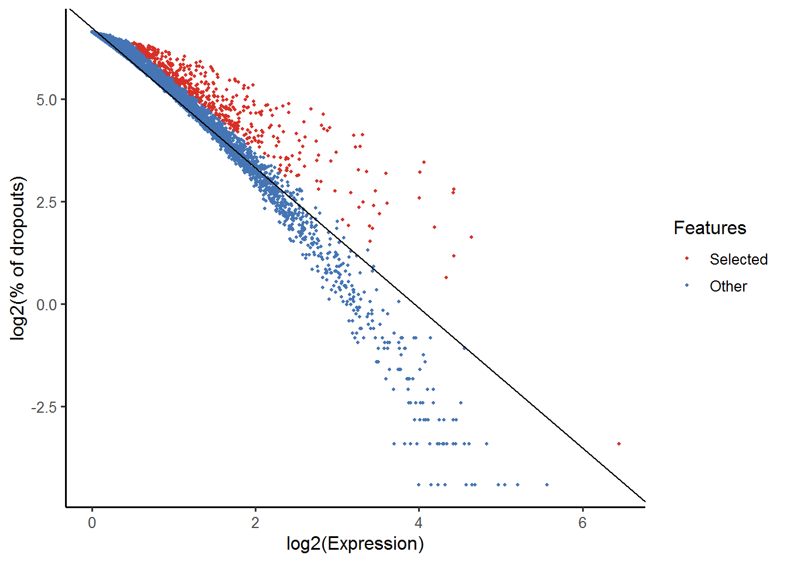
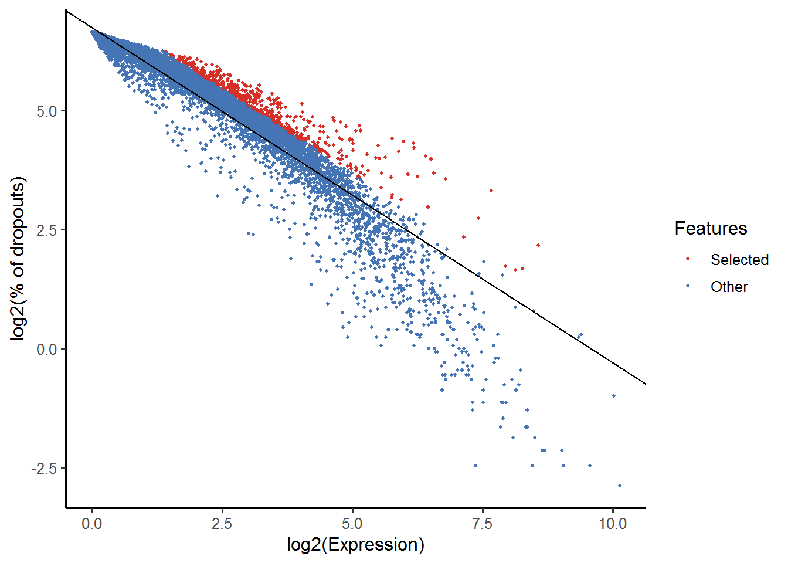

8 生物学分析
8.1 聚类介绍
对数据进行了标准化并移除了混淆因子后，就可以进行与手头的生物学问题相关的分析。分析的性质取决于数据集。 然而，一些方面在广泛的背景下有用，我们将在接下来的几章中讨论其中的一些方面。从scRNA-seq数据的聚类开始。
8.1.1 介绍
scRNA-seq最有希望的应用之一是基于转录谱的de novo发现和注释细胞类型。在计算上，这是一个难题，因为它相当于非监督聚类。 也就是说，我们需要根据转录组的相似性识别细胞群，不需要对细胞类型的任何先验知识。 此外，在大多数情况下，我们甚至不知道先验集群的数量。由于噪音（技术和生物）和高维度（比如基因），问题变得更具挑战性。
8.1.2 降维
在处理大型数据集时，应用某种降维方法是有帮助的。将数据投影到较低维度的子空间上，能够显著减少噪声。另一个好处是，在2维或3维子空间中可视化数据要容易得多。我们已经讨论了PCA(章节 7.3.2)和t-SNE(章节 7.3.2)。
8.1.3 聚类方法
非监督聚类 在机器学习中广泛研究并应用于不同领域。常用的流行方法是：层次聚类，k-means聚类，基于的图聚类。
8.1.3.1 层次聚类
层次聚类可以使用自下而上或自上而下的方法。自下而上策略中，每个细胞最初单独为一类，随后将类进行合并形成hieararchy：

Figure 8.1: 原始数据

Figure 8.2: 层次聚类树状图
使用自上而下策略，最初所有观测点为一类，递归拆分每个类形成hierarchy。该策略的一个优点是该方法是确定性的。
8.1.3.2 k-means
k-means聚类,将 _N_个细胞划分成 _k_个不同的类。以迭代的方式，分配类中心并将每个细胞分配个最近的类。

Figure 8.3: Schematic representation of the k-means clustering
scRNA-seq分析的大多数方法在某些步骤都包括 k-means环节。
8.1.3.3 基于图的方法
在过去的二十年中，人们对分析各个领域的网络产生了很大的兴趣。 一个目标是识别网络中节点的群体或模块。

Figure 8.4: Schematic representation of the graph network
通过构建图，其中每个节点代表一个细胞,一些方法可以应用于scRNA-seq数据。 然而，构建图并为边指定权重并非易事。 基于图的方法的一个优点是其中一些方法非常有效，可以应用于包含数百万节点的网络。
8.1.4 聚类的挑战
- 类个数 _k_的确定？
- What is a cell type?
- Scalability: in the last few years the number of cells in scRNA-seq experiments has grown by several orders of magnitude from ~\(10^2\) to ~\(10^6\)
- Tools are not user-friendly
8.1.5 Tools for scRNA-seq data
8.1.5.1 SINCERA
- SINCERA (Guo et al. 2015) is based on hierarchical clustering
- Data is converted to z-scores before clustering
- Identify k by finding the first singleton cluster in the hierarchy
8.1.5.2 SC3

Figure 8.5: SC3 pipeline
- SC3 (Kiselev et al. 2017) is based on PCA and spectral dimensionality reductions
- Utilises k-means
- Additionally performs the consensus clustering
8.1.5.3 tSNE + k-means
- Based on tSNE maps
- Utilises k-means
8.1.5.4 Seurat clustering
Seurat clustering is based on a community detection approach similar to SNN-Cliq and to one previously proposed for analyzing CyTOF data (Levine et al. 2015). Since Seurat has become more like an all-in-one tool for scRNA-seq data analysis we dedicate a separate chapter to discuss it in more details (chapter ??).
8.1.6 Comparing clustering
To compare two sets of clustering labels we can use adjusted Rand index. The index is a measure of the similarity between two data clusterings. Values of the adjusted Rand index lie in \([0;1]\) interval, where \(1\) means that two clusterings are identical and \(0\) means the level of similarity expected by chance.
8.2 Clustering example
library(pcaMethods)
library(SC3)
library(scater)
library(SingleCellExperiment)
library(pheatmap)
library(mclust)
set.seed(1234567)To illustrate clustering of scRNA-seq data, we consider the Deng dataset of cells from developing mouse embryo (Deng et al. 2014). We have preprocessed the dataset and created a SingleCellExperiment object in advance. We have also annotated the cells with the cell types identified in the original publication (it is the cell_type2 column in the colData slot).
8.2.1 Deng dataset
Let’s load the data and look at it:
deng <- readRDS("data/deng/deng-reads.rds")
deng
## class: SingleCellExperiment
## dim: 22431 268
## metadata(0):
## assays(2): counts logcounts
## rownames(22431): Hvcn1 Gbp7 ... Sox5 Alg11
## rowData names(10): feature_symbol is_feature_control ...
## total_counts log10_total_counts
## colnames(268): 16cell 16cell.1 ... zy.2 zy.3
## colData names(30): cell_type2 cell_type1 ... pct_counts_ERCC
## is_cell_control
## reducedDimNames(0):
## spikeNames(1): ERCCLet’s look at the cell type annotation:
table(colData(deng)$cell_type2)
##
## 16cell 4cell 8cell early2cell earlyblast late2cell
## 50 14 37 8 43 10
## lateblast mid2cell midblast zy
## 30 12 60 4A simple PCA analysis already separates some strong cell types and provides some insights in the data structure:
 As you can see, the early cell types separate quite well, but the three blastocyst timepoints are more difficult to distinguish.
As you can see, the early cell types separate quite well, but the three blastocyst timepoints are more difficult to distinguish.
8.2.2 SC3
Let’s run SC3 clustering on the Deng data. The advantage of the SC3 is that it can directly ingest a SingleCellExperiment object.
Now let’s image we do not know the number of clusters k (cell types). SC3 can estimate a number of clusters for you:
Interestingly, the number of cell types predicted by SC3 is smaller than in the original data annotation. However, early, mid and late stages of different cell types together, we will have exactly 6 cell types. We store the merged cell types in cell_type1 column of the colData slot:

Now we are ready to run SC3 (we also ask it to calculate biological properties of the clusters):
SC3 result consists of several different outputs (please look in (Kiselev et al. 2017) and SC3 vignette for more details). Here we show some of them:
Consensus matrix:
 Silhouette plot:
Silhouette plot:
 Heatmap of the expression matrix:
Heatmap of the expression matrix:
 Identified marker genes:
Identified marker genes:
 PCA plot with highlighted
PCA plot with highlighted SC3 clusters:
 Compare the results of
Compare the results of SC3 clustering with the original publication cell type labels:
Note SC3 can also be run in an interactive Shiny session:
This command will open SC3 in a web browser.
Note Due to direct calculation of distances SC3 becomes very slow when the number of cells is \(>5000\). For large datasets containing up to \(10^5\) cells we recomment using Seurat (see chapter ??).
Exercise 1: Run
SC3for \(k\) from 8 to 12 and explore different clustering solutions in your web browser.Exercise 2: Which clusters are the most stable when \(k\) is changed from 8 to 12? (Look at the “Stability” tab)
Exercise 3: Check out differentially expressed genes and marker genes for the obtained clusterings. Please use \(k=10\).
Exercise 4: Change the marker genes threshold (the default is 0.85). Does SC3 find more marker genes?
8.2.3 tSNE + kmeans
tSNE plots that we saw before (7.3.3) when used the scater package are made by using the Rtsne and ggplot2 packages. Here we will do the same:

Figure 8.6: tSNE map of the patient data
Note that all points on the plot above are black. This is different from what we saw before, when the cells were coloured based on the annotation. Here we do not have any annotation and all cells come from the same batch, therefore all dots are black.
Now we are going to apply k-means clustering algorithm to the cloud of points on the tSNE map. How many groups do you see in the cloud?
We will start with \(k=8\):
colData(deng)$tSNE_kmeans <- as.character(kmeans(deng@reducedDims$TSNE, centers = 8)$clust)
plotTSNE(deng, colour_by = "tSNE_kmeans")
Figure 8.7: tSNE map of the patient data with 8 colored clusters, identified by the k-means clustering algorithm
Exercise 7: Make the same plot for \(k=10\).
Exercise 8: Compare the results between tSNE+kmeans and the original publication cell types. Can the results be improved by changing the perplexity parameter?
Our solution:
As you may have noticed, tSNE+kmeans is stochastic
and gives different results every time they are run. To get a better
overview of the solutions, we need to run the methods multiple times. SC3 is also stochastic, but thanks to the consensus step, it is more robust and less likely to produce different outcomes.
8.2.4 SINCERA
As mentioned in the previous chapter SINCERA is based on hierarchical clustering. One important thing to keep in mind is that it performs a gene-level z-score transformation before doing clustering:
# perform gene-by-gene per-sample z-score transformation
dat <- apply(input, 1, function(y) scRNA.seq.funcs::z.transform.helper(y))
# hierarchical clustering
dd <- as.dist((1 - cor(t(dat), method = "pearson"))/2)
hc <- hclust(dd, method = "average")If the number of cluster is not known SINCERA can identify k as the minimum height of the hierarchical tree that generates no more than a specified number of singleton clusters (clusters containing only 1 cell)
num.singleton <- 0
kk <- 1
for (i in 2:dim(dat)[2]) {
clusters <- cutree(hc, k = i)
clustersizes <- as.data.frame(table(clusters))
singleton.clusters <- which(clustersizes$Freq < 2)
if (length(singleton.clusters) <= num.singleton) {
kk <- i
} else {
break;
}
}
cat(kk)
## 6Let’s now visualize the SINCERA results as a heatmap:

Figure 8.8: Clustering solutions of SINCERA method using found \(k\)
Exercise 10: Compare the results between SINCERA and the original publication cell types.
Our solution:
colData(deng)$SINCERA <- as.character(cutree(hc, k = kk))
adjustedRandIndex(colData(deng)$cell_type2, colData(deng)$SINCERA)Exercise 11: Is using the singleton cluster criteria for finding k a good idea?
8.3 Feature Selection
library(scRNA.seq.funcs)
library(matrixStats)
library(M3Drop)
library(RColorBrewer)
library(SingleCellExperiment)
set.seed(1)Single-cell RNASeq is capable of measuring the expression of many thousands of genes in every cell. However, in most situations only a portion of those will show a response to the biological condition of interest, e.g. differences in cell-type, drivers of differentiation, respond to an environmental stimulus. Most genes detected in a scRNASeq experiment will only be detected at different levels due to technical noise. One consequence of this is that technical noise and batch effects can obscure the biological signal of interest.
Thus, it is often advantageous to perform feature selection to remove those genes which only exhibit technical noise from downstream analysis. Not only does this generally increase the signal:noise ratio in the data; it also reduces the computational complexity of analyses, by reducing the total amount of data to be processed.
For scRNASeq data, we will be focusing on unsupervised methods of feature selection which don’t require any a priori information, such as cell-type labels or biological group, since they are not available, or may be unreliable, for many experiments. In contrast, differential expression (chapter 8.6) can be considered a form of supervised feature selection since it uses the known biological label of each sample to identify features (i.e. genes) which are expressed at different levels across groups.
For this section we will continue working with the Deng data.
deng <- readRDS("data/deng/deng-reads.rds")
celltype_labs <- colData(deng)$cell_type2
cell_colors <- brewer.pal(max(3,length(unique(celltype_labs))), "Set3")Feature selection is performed after QC, however this data has already been QCed so we can skip that step here. M3Drop contain two different feature selection methods “M3DropFeatureSelection” which is based on a Michaelis-Menten curve and is designed for full-transcript single-cell RNA-seq data (such as Smartseq2) and “NBumiFeatureSelectionCombinedDrop” which is based on a negative binomial model and is designed for UMI count data. We will demonstrate both on the Deng Smartseq2 data.
M3Drop feature selection is runs direction on a normalized (but not log-transformed) expression matrix. This can be extracted from our SingleCellExperiment object using the command below.
This function is compatible with most single-cell RNA-seq analysis packages including: scater, SingleCellExperiment, monocle, and Seurat. It can also convert an existing expression matrix to the correct form (removing undetected genes & normalizing/delogging) if you specify whether the matrix is raw counts, or log transformed. Check the manual for details:
Exercise 1: Confirm that the conversion function has removed undetected genes:
nrow(counts(deng)) - nrow(expr_matrix)
summary( rowSums(counts(deng))[! rownames(counts(deng)) %in% rownames(expr_matrix) ] )8.3.1 Identifying Genes vs a Null Model
There are two main approaches to unsupervised feature selection. The first is to identify genes which behave differently from a null model describing just the technical noise expected in the dataset.
If the dataset contains spike-in RNAs they can be used to directly model technical noise. However, measurements of spike-ins may not experience the same technical noise as endogenous transcripts (Svensson et al., 2017). In addition, scRNASeq experiments often contain only a small number of spike-ins which reduces our confidence in fitted model parameters.
8.3.1.1 Highly Variable Genes
The first method proposed to identify features in scRNASeq datasets was to identify highly variable genes (HVG). HVG assumes that if genes have large differences in expression across cells some of those differences are due to biological difference between the cells rather than technical noise. However, because of the nature of count data, there is a positive relationship between the mean expression of a gene and the variance in the read counts across cells. This relationship must be corrected for to properly identify HVGs.
Exercise 2 Using the functions rowMeans and rowVars to plot the relationship between mean expression and variance for all genes in this dataset. (Hint: use log=“xy” to plot on a log-scale).
plot(
rowMeans(expr_matrix),
rowVars(expr_matrix),
log="xy",
pch=16,
xlab="Mean Expression",
ylab="Variance",
main=""
) A popular method to correct for the relationship between variance and mean expression
was proposed by Brennecke et al..
To use the Brennecke method, we first normalize for library size then calculate
the mean and the square coefficient of variation (variation divided by
the squared mean expression). A quadratic curve is fit to the relationship
between these two variables for the ERCC spike-in, and then a chi-square test is used to find genes
significantly above the curve. This method is included in the M3Drop package as the
Brennecke_getVariableGenes(counts, spikes) function. However, this dataset does not contain spike-ins
so we will use the entire dataset to estimate the technical noise.
A popular method to correct for the relationship between variance and mean expression
was proposed by Brennecke et al..
To use the Brennecke method, we first normalize for library size then calculate
the mean and the square coefficient of variation (variation divided by
the squared mean expression). A quadratic curve is fit to the relationship
between these two variables for the ERCC spike-in, and then a chi-square test is used to find genes
significantly above the curve. This method is included in the M3Drop package as the
Brennecke_getVariableGenes(counts, spikes) function. However, this dataset does not contain spike-ins
so we will use the entire dataset to estimate the technical noise.
In the figure below the red curve is the fitted technical noise model and the dashed line is the 95% CI. Pink dots are the genes with significant biological variability after multiple-testing correction.

This function returns a matrix of significant genes as well as their estimated effect size (difference between observed and expected coefficient of variation), and their significance as raw p.values and FDR corrected q.values. For now we will just keep the names of the significant HVG genes.
Exercise 3 How many genes were signifcant using BrenneckeGetVariableGenes?
8.3.1.2 High Dropout Genes
An alternative to finding HVGs is to identify genes with unexpectedly high numbers of zeros. The frequency of zeros, known as the “dropout rate”, is very closely related to expression level in scRNASeq data. Zeros are the dominant feature of single-cell RNASeq data, typically accounting for over half of the entries in the final expression matrix. These zeros predominantly result from the failure of mRNAs failing to be reversed transcribed (Andrews and Hemberg, 2016). Reverse transcription is an enzyme reaction thus can be modelled using the Michaelis-Menten equation:
\[P_{dropout} = 1 - S/(K + S)\]
where \(S\) is the mRNA concentration in the cell (we will estimate this as average expression) and \(K\) is the Michaelis-Menten constant.
Because the Michaelis-Menten equation is a convex non-linear function, genes which are differentially expression across two or more populations of cells in our dataset will be shifted up/right of the Michaelis-Menten model (see Figure below).
K <- 49
S_sim <- 10^seq(from = -3, to = 4, by = 0.05) # range of expression values
MM <- 1 - S_sim / (K + S_sim)
plot(
S_sim,
MM,
type = "l",
lwd = 3,
xlab = "Expression",
ylab = "Dropout Rate",
xlim = c(1,1000)
)
S1 <- 10 # Mean expression in population 1
P1 <- 1 - S1 / (K + S1) # Dropouts for cells in condition 1
S2 <- 750 # Mean expression in population 2
P2 <- 1 - S2 / (K + S2) # Dropouts for cells in condition 2
points(
c(S1, S2),
c(P1, P2),
pch = 16,
col = "grey85",
cex = 3
)
mix <- 0.5 # proportion of cells in condition 1
points(
S1 * mix + S2 * (1 - mix),
P1 * mix + P2 * (1 - mix),
pch = 16,
col = "grey35",
cex = 3
) Note: add
Note: add log="x" to the plot call above to see how this looks on the log scale, which is used in M3Drop figures.
Exercise 4: Produce the same plot as above with different expression levels (S1 & S2) and/or mixtures (mix).
plot(
S_sim,
MM,
type = "l",
lwd = 3,
xlab = "Expression",
ylab = "Dropout Rate",
xlim = c(1, 1000),
log = "x"
)
S1 <- 100
P1 <- 1 - S1 / (K + S1) # Expression & dropouts for cells in condition 1
S2 <- 1000
P2 <- 1 - S2 / (K + S2) # Expression & dropouts for cells in condition 2
points(
c(S1, S2),
c(P1, P2),
pch = 16,
col = "grey85",
cex = 3
)
mix <- 0.75 # proportion of cells in condition 1
points(
S1 * mix + S2 * (1 - mix),
P1 * mix + P2 * (1 - mix),
pch = 16,
col = "grey35",
cex = 3
)We use M3Drop to identify significant outliers to the right of the MM curve. We also apply 1% FDR multiple testing correction:
M3Drop_genes <- M3DropFeatureSelection(
expr_matrix,
mt_method = "fdr",
mt_threshold = 0.01
)
M3Drop_genes <- M3Drop_genes$Gene
An alternative method is contained in the M3Drop package that is tailored specifically for UMI-tagged data which generally contains many zeros resulting from low sequencing coverage in addition to those resulting from insufficient reverse-transcription. This model is the Depth-Adjusted Negative Binomial (DANB). This method describes each expression observation as a negative binomial model with a mean related to both the mean expression of the respective gene and the sequencing depth of the respective cell, and a variance related to the mean-expression of the gene.
This method is designed to model the raw counts in a dataset directly, and we can extract the appropriate matrix using the “NBumiConvertData” function similar to M3Drop. However, we have an extra step for fitting the model since that is the slowest step of the method and we are currently working on additional methods that can use this model information for other things (such as normalization, co-expression testing, highly variable gene detection).
This method includes a binomial test of the significance of each feature, but since the Deng data is not UMI counts the model does not fit the noise sufficiently and far too many genes will be called as significant. Thus we will take the top 1500 by effect size.
deng_int <- NBumiConvertData(deng)
DANB_fit <- NBumiFitModel(deng_int) # DANB is fit to the raw count matrix
# Perform DANB feature selection
DropFS <- NBumiFeatureSelectionCombinedDrop(DANB_fit, method="fdr", qval.thresh=0.01, suppress.plot=FALSE)
DANB_genes <- DropFS[1:1500,]$Gene Exercise 5
How many genes were signifcant using NBumiFeatureSelectionCombinedDrop?
Exercise 5
How many genes were signifcant using NBumiFeatureSelectionCombinedDrop?
8.3.2 Correlated Expression
A completely different approach to feature selection is to use gene-gene correlations. This method is based on the idea that multiple genes will be differentially expressed between different cell-types or cell-states. Genes which are expressed in the same cell-population will be positively correlated with each other where as genes expressed in different cell-populations will be negatively correated with each other. Thus important genes can be identified by the magnitude of their correlation with other genes.
The limitation of this method is that it assumes technical noise is random and independent for each cell, thus shouldn’t produce gene-gene correlations, but this assumption is violated by batch effects which are generally systematic between different experimental batches and will produce gene-gene correlations. As a result it is more appropriate to take the top few thousand genes as ranked by gene-gene correlation than consider the significance of the correlations.
Lastly, another common method for feature selection in scRNASeq data is to use PCA loadings. Genes with high PCA loadings are likely to be highly variable and correlated with many other variable genes, thus may be relevant to the underlying biology. However, as with gene-gene correlations PCA loadings tend to be susceptible to detecting systematic variation due to batch effects; thus it is recommended to plot the PCA results to determine those components corresponding to the biological variation rather than batch effects.
# PCA is typically performed on log-transformed expression data
pca <- prcomp(log(expr_matrix + 1) / log(2))
# plot projection
plot(
pca$rotation[,1],
pca$rotation[,2],
pch = 16,
col = cell_colors[as.factor(celltype_labs)]
) 
# calculate loadings for components 1 and 2
score <- rowSums(abs(pca$x[,c(1,2)]))
names(score) <- rownames(expr_matrix)
score <- score[order(-score)]
PCA_genes <- names(score[1:1500])Exercise 6 Consider the top 5 principal components. Which appear to be most biologically relevant? How does the top 1,500 features change if you consider the loadings for those components?
8.3.3 Comparing Methods
We can check whether the identified features really do represent genes differentially expressed between cell-types in this dataset.
 We can also consider how consistent each feature selection method is with the others using the Jaccard Index:
We can also consider how consistent each feature selection method is with the others using the Jaccard Index:
Exercise 7
Plot the expression of the features for each of the other methods. Which appear to be differentially expressed? How consistent are the different methods for this dataset?
8.4 Pseudotime analysis
library(SingleCellExperiment)
library(TSCAN)
library(M3Drop)
library(monocle)
library(destiny)
library(SLICER)
library(ouija)
library(scater)
library(ggplot2)
library(ggthemes)
library(ggbeeswarm)
library(corrplot)
set.seed(1)In many situations, one is studying a process where cells change continuously. This includes, for example, many differentiation processes taking place during development: following a stimulus, cells will change from one cell-type to another. Ideally, we would like to monitor the expression levels of an individual cell over time. Unfortunately, such monitoring is not possible with scRNA-seq since the cell is lysed (destroyed) when the RNA is extracted.
Instead, we must sample at multiple time-points and obtain snapshots of the gene expression profiles. Since some of the cells will proceed faster along the differentiation than others, each snapshot may contain cells at varying points along the developmental progression. We use statistical methods to order the cells along one or more trajectories which represent the underlying developmental trajectories, this ordering is referred to as “pseudotime”.
In this chapter we will consider five different tools: Monocle, TSCAN, destiny, SLICER and ouija for ordering cells according to their pseudotime development. To illustrate the methods we will be using a dataset on mouse embryonic development (Deng et al. 2014). The dataset consists of 268 cells from 10 different time-points of early mouse development. In this case, there is no need for pseudotime alignment since the cell labels provide information about the development trajectory. Thus, the labels allow us to establish a ground truth so that we can evaluate and compare the different methods.
A recent review by Cannoodt et al provides a detailed summary of the various computational methods for trajectory inference from single-cell transcriptomics (Cannoodt, Saelens, and Saeys 2016). They discuss several tools, but unfortunately for our purposes many of these tools do not have complete or well-maintained implementations, and/or are not implemented in R.
Cannoodt et al cover:
- SCUBA - Matlab implementation
- Wanderlust - Matlab (and requires registration to even download)
- Wishbone - Python
- SLICER - R, but package only available on Github
- SCOUP - C++ command line tool
- Waterfall - R, but one R script in supplement
- Mpath - R pkg, but available as tar.gz on Github; function documentation but no vignette/workflow
- Monocle - Bioconductor package
- TSCAN - Bioconductor package
Unfortunately only two tools discussed (Monocle and TSCAN) meet the gold standard of open-source software hosted in a reputable repository.
The following figures from the paper summarise some of the features of the various tools.

Figure 8.9: Descriptions of trajectory inference methods for single-cell transcriptomics data (Fig. 2 from Cannoodt et al, 2016).

Figure 8.10: Characterization of trajectory inference methods for single-cell transcriptomics data (Fig. 3 from Cannoodt et al, 2016).
8.4.1 First look at Deng data
Let us take a first look at the Deng data, without yet applying sophisticated pseudotime methods. As the plot below shows, simple PCA does a very good job of displaying the structure in these data. It is only once we reach the blast cell types (“earlyblast”, “midblast”, “lateblast”) that PCA struggles to separate the distinct cell types.
deng_SCE <- readRDS("data/deng/deng-reads.rds")
deng_SCE$cell_type2 <- factor(
deng_SCE$cell_type2,
levels = c("zy", "early2cell", "mid2cell", "late2cell",
"4cell", "8cell", "16cell", "earlyblast",
"midblast", "lateblast")
)
cellLabels <- deng_SCE$cell_type2
deng <- counts(deng_SCE)
colnames(deng) <- cellLabels
deng_SCE <- runPCA(deng_SCE)
plotPCA(deng_SCE, colour_by = "cell_type2") PCA, here, provides a useful baseline for assessing different pseudotime methods. For a very naive pseudotime we can just take the co-ordinates of the first principal component.
PCA, here, provides a useful baseline for assessing different pseudotime methods. For a very naive pseudotime we can just take the co-ordinates of the first principal component.
deng_SCE$PC1 <- reducedDim(deng_SCE, "PCA")[,1]
ggplot(as.data.frame(colData(deng_SCE)), aes(x = PC1, y = cell_type2,
colour = cell_type2)) +
geom_quasirandom(groupOnX = FALSE) +
scale_color_tableau() + theme_classic() +
xlab("First principal component") + ylab("Timepoint") +
ggtitle("Cells ordered by first principal component")
As the plot above shows, PC1 struggles to correctly order cells early and late in the developmental timecourse, but overall does a relatively good job of ordering cells by developmental time.
Can bespoke pseudotime methods do better than naive application of PCA?
8.4.2 TSCAN
TSCAN combines clustering with pseudotime analysis. First it clusters the cells using mclust, which is based on a mixture of normal distributions. Then it builds a minimum spanning tree to connect the clusters. The branch of this tree that connects the largest number of clusters is the main branch which is used to determine pseudotime.
First we will try to use all genes to order the cells.
procdeng <- TSCAN::preprocess(deng)
colnames(procdeng) <- 1:ncol(deng)
dengclust <- TSCAN::exprmclust(procdeng, clusternum = 10)
TSCAN::plotmclust(dengclust)
dengorderTSCAN <- TSCAN::TSCANorder(dengclust, orderonly = FALSE)
pseudotime_order_tscan <- as.character(dengorderTSCAN$sample_name)
deng_SCE$pseudotime_order_tscan <- NA
deng_SCE$pseudotime_order_tscan[as.numeric(dengorderTSCAN$sample_name)] <-
dengorderTSCAN$PseudotimeFrustratingly, TSCAN only provides pseudotime values for 221 of 268 cells, silently returning missing values for non-assigned cells.
Again, we examine which timepoints have been assigned to each state:
cellLabels[dengclust$clusterid == 10]
ggplot(as.data.frame(colData(deng_SCE)),
aes(x = pseudotime_order_tscan,
y = cell_type2, colour = cell_type2)) +
geom_quasirandom(groupOnX = FALSE) +
scale_color_tableau() + theme_classic() +
xlab("TSCAN pseudotime") + ylab("Timepoint") +
ggtitle("Cells ordered by TSCAN pseudotime")
TSCAN gets the development trajectory the “wrong way around”, in the sense that later pseudotime values correspond to early timepoints and vice versa. This is not inherently a problem (it is easy enough to reverse the ordering to get the intuitive interpretation of pseudotime), but overall it would be a stretch to suggest that TSCAN performs better than PCA on this dataset. (As it is a PCA-based method, perhaps this is not entirely surprising.)
Exercise 1 Compare results for different numbers of clusters (clusternum).
8.4.3 monocle
Monocle skips the clustering stage of TSCAN and directly builds a minimum spanning tree on a reduced dimension representation of the cells to connect all cells. Monocle then identifies the longest path in this tree to determine pseudotime. If the data contains diverging trajectories (i.e. one cell type differentiates into two different cell-types), monocle can identify these. Each of the resulting forked paths is defined as a separate cell state.
Unfortunately, Monocle does not work when all the genes are used, so we must carry out feature selection. First, we use M3Drop:

Now run monocle:
colnames(d) <- 1:ncol(d)
geneNames <- rownames(d)
rownames(d) <- 1:nrow(d)
pd <- data.frame(timepoint = cellLabels)
pd <- new("AnnotatedDataFrame", data=pd)
fd <- data.frame(gene_short_name = geneNames)
fd <- new("AnnotatedDataFrame", data=fd)
dCellData <- newCellDataSet(d, phenoData = pd, featureData = fd, expressionFamily = tobit())
dCellData <- setOrderingFilter(dCellData, which(geneNames %in% m3dGenes))
dCellData <- estimateSizeFactors(dCellData)
dCellDataSet <- reduceDimension(dCellData, pseudo_expr = 1)
dCellDataSet <- orderCells(dCellDataSet, reverse = FALSE)
plot_cell_trajectory(dCellDataSet)
# Store the ordering
pseudotime_monocle <-
data.frame(
Timepoint = phenoData(dCellDataSet)$timepoint,
pseudotime = phenoData(dCellDataSet)$Pseudotime,
State = phenoData(dCellDataSet)$State
)
rownames(pseudotime_monocle) <- 1:ncol(d)
pseudotime_order_monocle <-
rownames(pseudotime_monocle[order(pseudotime_monocle$pseudotime), ]) We can again compare the inferred pseudotime to the known sampling timepoints.
We can again compare the inferred pseudotime to the known sampling timepoints.
deng_SCE$pseudotime_monocle <- pseudotime_monocle$pseudotime
ggplot(as.data.frame(colData(deng_SCE)),
aes(x = pseudotime_monocle,
y = cell_type2, colour = cell_type2)) +
geom_quasirandom(groupOnX = FALSE) +
scale_color_tableau() + theme_classic() +
xlab("monocle pseudotime") + ylab("Timepoint") +
ggtitle("Cells ordered by monocle pseudotime")
Monocle - at least with its default settings - performs poorly on these data. The “late2cell” group is completely separated from the “zy”, “early2cell” and “mid2cell” cells (though these are correctly ordered), and there is no separation at all of “4cell”, “8cell”, “16cell” or any blast cell groups.
8.4.4 Diffusion maps
Diffusion maps were introduced by Ronald Coifman and Stephane Lafon, and the underlying idea is to assume that the data are samples from a diffusion process. The method infers the low-dimensional manifold by estimating the eigenvalues and eigenvectors for the diffusion operator related to the data.
Angerer et al have applied the diffusion maps concept to the analysis of single-cell RNA-seq data to create an R package called destiny.
We will take the ranko prder of cells in the first diffusion map component as “diffusion map pseudotime” here.
deng <- logcounts(deng_SCE)
colnames(deng) <- cellLabels
dm <- DiffusionMap(t(deng))
tmp <- data.frame(DC1 = eigenvectors(dm)[,1],
DC2 = eigenvectors(dm)[,2],
Timepoint = deng_SCE$cell_type2)
ggplot(tmp, aes(x = DC1, y = DC2, colour = Timepoint)) +
geom_point() + scale_color_tableau() +
xlab("Diffusion component 1") +
ylab("Diffusion component 2") +
theme_classic()
deng_SCE$pseudotime_diffusionmap <- rank(eigenvectors(dm)[,1])
ggplot(as.data.frame(colData(deng_SCE)),
aes(x = pseudotime_diffusionmap,
y = cell_type2, colour = cell_type2)) +
geom_quasirandom(groupOnX = FALSE) +
scale_color_tableau() + theme_classic() +
xlab("Diffusion map pseudotime (first diffusion map component)") +
ylab("Timepoint") +
ggtitle("Cells ordered by diffusion map pseudotime")
Like the other methods, using the first diffusion map component from destiny as pseudotime does a good job at ordering the early time-points (if we take high values as “earlier” in developement), but it is unable to distinguish the later ones.
Exercise 2 Do you get a better resolution between the later time points by considering additional eigenvectors?
Exercise 3 How does the ordering change if you only use the genes identified by M3Drop?
8.4.5 SLICER
The SLICER method is an algorithm for constructing trajectories that
describe gene expression changes during a sequential biological
process, just as Monocle and TSCAN are. SLICER is designed to capture
highly nonlinear gene expression changes, automatically select genes
related to the process, and detect multiple branch and loop features
in the trajectory (Welch, Hartemink, and Prins 2016). The SLICER R package is available
from its GitHub repository and
can be installed from there using the devtools package.
We use the select_genes function in SLICER to automatically select
the genes to use in builing the cell trajectory. The function uses
“neighbourhood variance” to identify genes that vary smoothly, rather
than fluctuating randomly, across the set of cells. Following this, we
determine which value of “k” (number of nearest neighbours) yields an embedding that
most resembles a trajectory. Then we estimate the locally linear
embedding of the cells.
library("lle")
slicer_genes <- select_genes(t(deng))
k <- select_k(t(deng[slicer_genes,]), kmin = 30, kmax=60)
slicer_traj_lle <- lle(t(deng[slicer_genes,]), m = 2, k)$Y
reducedDim(deng_SCE, "LLE") <- slicer_traj_lle
plotReducedDim(deng_SCE, use_dimred = "LLE", colour_by = "cell_type2") +
xlab("LLE component 1") + ylab("LLE component 2") +
ggtitle("Locally linear embedding of cells from SLICER")
With the locally linear embedding computed we can construct a k-nearest neighbour graph that is fully connected. This plot displays a (yellow) circle for each cell, with the cell ID number overlaid in blue. Here we show the graph computed using 10 nearest neighbours. Here, SLICER appears to detect one major trajectory with one branch.
slicer_traj_graph <- conn_knn_graph(slicer_traj_lle, 10)
plot(slicer_traj_graph, main = "Fully connected kNN graph from SLICER")
From this graph we can identify “extreme” cells that are candidates for start/end cells in the trajectory.

Having defined a start cell we can order the cells in the estimated pseudotime.
pseudotime_order_slicer <- cell_order(slicer_traj_graph, start)
branches <- assign_branches(slicer_traj_graph, start)
pseudotime_slicer <-
data.frame(
Timepoint = cellLabels,
pseudotime = NA,
State = branches
)
pseudotime_slicer$pseudotime[pseudotime_order_slicer] <-
1:length(pseudotime_order_slicer)
deng_SCE$pseudotime_slicer <- pseudotime_slicer$pseudotimeWe can again compare the inferred pseudotime to the known sampling timepoints. SLICER does not provide a pseudotime value per se, just an ordering of cells.
ggplot(as.data.frame(colData(deng_SCE)),
aes(x = pseudotime_slicer,
y = cell_type2, colour = cell_type2)) +
geom_quasirandom(groupOnX = FALSE) +
scale_color_tableau() + theme_classic() +
xlab("SLICER pseudotime (cell ordering)") +
ylab("Timepoint") +
theme_classic() Like the previous method, SLICER here provides a good ordering for the
early time points. It places “16cell” cells before “8cell” cells, but provides better ordering for blast cells than many of the earlier methods.
Like the previous method, SLICER here provides a good ordering for the
early time points. It places “16cell” cells before “8cell” cells, but provides better ordering for blast cells than many of the earlier methods.
Exercise 4 How do the results change for different k? (e.g. k = 5) What about changing the number of nearest neighbours in
the call to conn_knn_graph?
Exercise 5 How does the ordering change if you use a different set of genes from those chosen by SLICER (e.g. the genes identified by M3Drop)?
8.4.6 Ouija
Ouija (http://kieranrcampbell.github.io/ouija/) takes a different approach from the pseudotime estimation methods we have looked at so far. Earlier methods have all been “unsupervised”, which is to say that apart from perhaps selecting informative genes we do not supply the method with any prior information about how we expect certain genes or the trajectory as a whole to behave.
Ouija, in contrast, is a probabilistic framework that allows for interpretable learning of single-cell pseudotimes using only small panels of marker genes. This method:
- infers pseudotimes from a small number of marker genes letting you understand why the pseudotimes have been learned in terms of those genes;
- provides parameter estimates (with uncertainty) for interpretable gene regulation behaviour (such as the peak time or the upregulation time);
- has a Bayesian hypothesis test to find genes regulated before others along the trajectory;
- identifies metastable states, ie discrete cell types along the continuous trajectory.
We will supply the following marker genes to Ouija (with timepoints where they are expected to be highly expressed):
- Early timepoints: Dazl, Rnf17, Sycp3, Nanog, Pou5f1, Fgf8, Egfr, Bmp5, Bmp15
- Mid timepoints: Zscan4b, Foxa1, Prdm14, Sox21
- Late timepoints: Creb3, Gpx4, Krt8, Elf5, Eomes, Cdx2, Tdgf1, Gdf3
With Ouija we can model genes as either exhibiting monotonic up or down regulation (known as switch-like behaviour), or transient behaviour where the gene briefly peaks. By default, Ouija assumes all genes exhibit switch-like behaviour (the authors assure us not to worry if we get it wrong - the noise model means incorrectly specifying a transient gene as switch-like has minimal effect).
Here we can “cheat” a little and check that our selected marker genes do actually identify different timepoints of the differentiation process.
ouija_markers_down <- c("Dazl", "Rnf17", "Sycp3", "Fgf8",
"Egfr", "Bmp5", "Bmp15", "Pou5f1")
ouija_markers_up <- c("Creb3", "Gpx4", "Krt8", "Elf5", "Cdx2",
"Tdgf1", "Gdf3", "Eomes")
ouija_markers_transient <- c("Zscan4b", "Foxa1", "Prdm14", "Sox21")
ouija_markers <- c(ouija_markers_down, ouija_markers_up,
ouija_markers_transient)
plotExpression(deng_SCE, ouija_markers, x = "cell_type2", colour_by = "cell_type2") +
theme(axis.text.x = element_text(angle = 60, hjust = 1)) In order to fit the pseudotimes wesimply call
In order to fit the pseudotimes wesimply call ouija, passing in the expected response types. Note that if no response types are provided then they are all assumed to be switch-like by default, which we will do here. The input to Ouija can be a cell-by-gene matrix of non-negative expression values, or an ExpressionSet object, or, happily, by selecting the logcounts values from a SingleCellExperiment object.
We can apply prior information about whether genes are up- or down-regulated across the differentiation process, and also provide prior information about when the switch in expression or a peak in expression is likely to occur.
We can fit the Ouija model using either:
- Hamiltonian Monte Carlo (HMC) - full MCMC inference where gradient information of the log-posterior is used to “guide” the random walk through the parameter space, or
- Automatic Differentiation Variational Bayes (ADVI or simply VI) - approximate inference where the KL divergence to an approximate distribution is minimised.
In general, HMC will provide more accurate inference with approximately correct posterior variance for all parameters. However, VB is orders of magnitude quicker than HMC and while it may underestimate posterior variance, the Ouija authors suggest that anecdotally it often performs as well as HMC for discovering posterior pseudotimes.
To help the Ouija model, we provide it with prior information about the strength of switches for up- and down-regulated genes. By setting switch strength to -10 for down-regulated genes and 10 for up-regulated genes with a prior strength standard deviation of 0.5 we are telling the model that we are confident about the expected behaviour of these genes across the differentiation process.
options(mc.cores = parallel::detectCores())
response_type <- c(rep("switch", length(ouija_markers_down) +
length(ouija_markers_up)),
rep("transient", length(ouija_markers_transient)))
switch_strengths <- c(rep(-10, length(ouija_markers_down)),
rep(10, length(ouija_markers_up)))
switch_strength_sd <- c(rep(0.5, length(ouija_markers_down)),
rep(0.5, length(ouija_markers_up)))
garbage <- capture.output(
oui_vb <- ouija(deng_SCE[ouija_markers,],
single_cell_experiment_assay = "logcounts",
response_type = response_type,
switch_strengths = switch_strengths,
switch_strength_sd = switch_strength_sd,
inference_type = "vb")
)
print(oui_vb)We can plot the gene expression over pseudotime along with the maximum a posteriori (MAP) estimates of the mean function (the sigmoid or Gaussian transient function) using the plot_expression function.

We can also visualise when in the trajectory gene regulation behaviour occurs, either in the form of the switch time or the peak time (for switch-like or transient genes) using the plot_switch_times and plot_transient_times functions:

 Identify metastable states using consistency matrices.
Identify metastable states using consistency matrices.

map_pst <- map_pseudotime(oui_vb)
ouija_pseudotime <- data.frame(map_pst, cell_classifications)
ggplot(ouija_pseudotime, aes(x = map_pst, y = cell_classifications)) +
geom_point() +
xlab("MAP pseudotime") +
ylab("Cell classification")
deng_SCE$pseudotime_ouija <- ouija_pseudotime$map_pst
deng_SCE$ouija_cell_class <- ouija_pseudotime$cell_classifications
ggplot(as.data.frame(colData(deng_SCE)),
aes(x = pseudotime_ouija,
y = cell_type2, colour = cell_type2)) +
geom_quasirandom(groupOnX = FALSE) +
scale_color_tableau() + theme_classic() +
xlab("Ouija pseudotime") +
ylab("Timepoint") +
theme_classic()
Ouija does quite well in the ordering of the cells here, although it can be sensitive to the choice of marker genes and prior information supplied. How do the results change if you select different marker genes or change the priors?
Ouija identifies four metastable states here, which we might annotate as “zygote/2cell”, “4/8/16 cell”, “blast1” and “blast2”.
ggplot(as.data.frame(colData(deng_SCE)),
aes(x = as.factor(ouija_cell_class),
y = pseudotime_ouija, colour = cell_type2)) +
geom_boxplot() +
coord_flip() +
scale_color_tableau() + theme_classic() +
xlab("Ouija cell classification") +
ylab("Ouija pseudotime") +
theme_classic() A common analysis is to work out the regulation orderings of genes. For example, is gene A upregulated before gene B? Does gene C peak before the downregulation of gene D? Ouija answers these questions in terms of a Bayesian hypothesis test of whether the difference in regulation timing (either switch time or peak time) is significantly different to 0. This is collated using the gene_regulation function.
A common analysis is to work out the regulation orderings of genes. For example, is gene A upregulated before gene B? Does gene C peak before the downregulation of gene D? Ouija answers these questions in terms of a Bayesian hypothesis test of whether the difference in regulation timing (either switch time or peak time) is significantly different to 0. This is collated using the gene_regulation function.
## # A tibble: 6 x 7
## # Groups: label, gene_A [6]
## label gene_A gene_B mean_difference lower_95 upper_95 significant
## <chr> <chr> <chr> <dbl> <dbl> <dbl> <lgl>
## 1 Bmp15 - Cdx2 Bmp15 Cdx2 -0.0658 -1.17e-1 -0.0136 TRUE
## 2 Bmp15 - Creb3 Bmp15 Creb3 0.266 1.96e-1 0.321 TRUE
## 3 Bmp15 - Elf5 Bmp15 Elf5 -0.665 -7.03e-1 -0.622 TRUE
## 4 Bmp15 - Eomes Bmp15 Eomes 0.0765 -1.30e-2 0.150 FALSE
## 5 Bmp15 - Foxa1 Bmp15 Foxa1 -0.0157 -4.95e-2 0.0128 FALSE
## 6 Bmp15 - Gdf3 Bmp15 Gdf3 0.0592 2.06e-4 0.114 TRUEWhat conclusions can you draw from the gene regulation output from Ouija?
If you have time, you might try the HMC inference method and see if that changes the Ouija results in any way.
8.4.7 Comparison of the methods
How do the trajectories inferred by TSCAN, Monocle, Diffusion Map, SLICER and Ouija compare?
TSCAN and Diffusion Map methods get the trajectory the “wrong way round”, so we’ll adjust that for these comparisons.
df_pseudotime <- as.data.frame(
colData(deng_SCE)[, grep("pseudotime", colnames(colData(deng_SCE)))]
)
colnames(df_pseudotime) <- gsub("pseudotime_", "",
colnames(df_pseudotime))
df_pseudotime$PC1 <- deng_SCE$PC1
df_pseudotime$order_tscan <- -df_pseudotime$order_tscan
df_pseudotime$diffusionmap <- -df_pseudotime$diffusionmap
corrplot.mixed(cor(df_pseudotime, use = "na.or.complete"),
order = "hclust", tl.col = "black",
main = "Correlation matrix for pseudotime results",
mar = c(0, 0, 3.1, 0)) We see here that Ouija, TSCAN and SLICER all give trajectories that are similar and strongly correlated with PC1. Diffusion Map is less strongly correlated with these methods, and Monocle gives very different results.
We see here that Ouija, TSCAN and SLICER all give trajectories that are similar and strongly correlated with PC1. Diffusion Map is less strongly correlated with these methods, and Monocle gives very different results.
Exercise 6: Compare destiny and SLICER to TSCAN, Monocle and Ouija in more depth. Where and how do they differ?
8.4.8 Expression of genes through time
Each package also enables the visualization of expression through pseudotime. Following individual genes is very helpful for identifying genes that play an important role in the differentiation process. We illustrate the procedure using the Rhoa gene.
We have added the pseudotime values computed with all methods here to
the colData slot of an SCE object. Having done that, the full
plotting capabilities of the scater package can be used to
investigate relationships between gene expression, cell populations
and pseudotime. This is particularly useful for the packages such as
SLICER that do not provide plotting functions.
Principal components
plotExpression(deng_SCE, "Rhoa", x = "PC1",
colour_by = "cell_type2", show_violin = FALSE,
show_smooth = TRUE) TSCAN
TSCAN
plotExpression(deng_SCE, "Rhoa", x = "pseudotime_order_tscan",
colour_by = "cell_type2", show_violin = FALSE,
show_smooth = TRUE) Monocle
Monocle
plotExpression(deng_SCE, "Rhoa", x = "pseudotime_monocle",
colour_by = "cell_type2", show_violin = FALSE,
show_smooth = TRUE) Diffusion Map
Diffusion Map
plotExpression(deng_SCE, "Rhoa", x = "pseudotime_diffusionmap",
colour_by = "cell_type2", show_violin = FALSE,
show_smooth = TRUE)
SLICER
plotExpression(deng_SCE, "Rhoa", x = "pseudotime_slicer",
colour_by = "cell_type2", show_violin = FALSE,
show_smooth = TRUE) Ouija
Ouija
plotExpression(deng_SCE, "Rhoa", x = "pseudotime_ouija",
colour_by = "cell_type2", show_violin = FALSE,
show_smooth = TRUE) How many of these methods outperform the naive approach of using the first principal component to represent pseudotime for these data?
How many of these methods outperform the naive approach of using the first principal component to represent pseudotime for these data?
Exercise 7: Repeat the exercise using a subset of the genes, e.g. the set of highly variable genes that can be obtained using Brennecke_getVariableGenes()
8.5 Imputation
library(scImpute)
library(SC3)
library(scater)
library(SingleCellExperiment)
library(mclust)
library(DrImpute)
library(Rmagic)
set.seed(1234567)As discussed previously, one of the main challenges when analyzing scRNA-seq data is the presence of zeros, or dropouts. The dropouts are assumed to have arisen for three possible reasons:
- The gene was not expressed in the cell and hence there are no transcripts to sequence
- The gene was expressed, but for some reason the transcripts were lost somewhere prior to sequencing
- The gene was expressed and transcripts were captured and turned into cDNA, but the sequencing depth was not sufficient to produce any reads.
Thus, dropouts could be result of experimental shortcomings, and if this is the case then we would like to provide computational corrections. One possible solution is to impute the dropouts in the expression matrix. To be able to impute gene expression values, one must have an underlying model. However, since we do not know which dropout events are technical artefacts and which correspond to the transcript being truly absent, imputation is a difficult challenge and prone to creating false-positive results in downstream analysis.
There are many different imputation methods available we will consider three fast, published methods: MAGIC (Dijk et al. 2017), DrImpute and scImpute (Li and Li 2017).
DrImpute and scImpute both use a model to determine which zeros are technical and impute only those values. Both use clustering to identify a group of cells that are assumed to have homogenous expression. DrImpute imputes all values that are not consistently zero in all cells of a cluster. Whereas, scImpute uses a zero-inflated normal distribution fit to log-normalized expression values and imputed all inflated zeros.
8.5.1 scImpute
To test scImpute, we use the default parameters and we apply it to the Deng dataset that we have worked with before. scImpute takes a .csv or .txt file as an input:
deng <- readRDS("data/deng/deng-reads.rds")
write.csv(counts(deng), "deng.csv")
scimpute(
count_path = "deng.csv",
infile = "csv",
outfile = "txt",
out_dir = "./",
Kcluster = 10,
ncores = 2
)Now we can compare the results with original data by considering a PCA plot
res <- read.table("scimpute_count.txt")
colnames(res) <- NULL
res <- SingleCellExperiment(
assays = list(logcounts = log2(as.matrix(res) + 1)),
colData = colData(deng)
)
rowData(res)$feature_symbol <- rowData(deng)$feature_symbol
plotPCA(
res,
colour_by = "cell_type2"
)
Compare this result to the original data in Chapter 8.2. What are the most significant differences?
We can examine the expression of specific genes to directly see the effect of imputation on the expression distribution.


To evaluate the impact of the imputation, we use SC3 to cluster the imputed matrix
res <- sc3_estimate_k(res)
metadata(res)$sc3$k_estimation
res <- sc3(res, ks = 10, n_cores = 1, gene_filter = FALSE)
adjustedRandIndex(colData(deng)$cell_type2, colData(res)$sc3_10_clusters)
plotPCA(
res,
colour_by = "sc3_10_clusters"
)
Exercise: Based on the PCA and the clustering results, do you think that imputation using scImpute is a good idea for the Deng dataset?
8.5.2 DrImpute
We can do the same for DrImpute. DrImpute runs on a log-normalized expression matrix directly in R, we generate this matrix using scater, then run DrImpute. Unlike scImpute, DrImpute considers the consensus imputation across a range of ks using two differ correlation distances:
deng <- normalize(deng)
res <- DrImpute(deng@assays[["logcounts"]], ks=8:12)
colnames(res) <- colnames(deng)
rownames(res) <- rownames(deng)
res <- SingleCellExperiment(
assays = list(logcounts = as.matrix(res)),
colData = colData(deng)
)
rowData(res)$feature_symbol <- rowData(deng)$feature_symbol
plotPCA(
res,
colour_by = "cell_type2"
)
 Exercise: Check the sc3 clustering of the DrImpute matrix, do you think that imputation using
Exercise: Check the sc3 clustering of the DrImpute matrix, do you think that imputation using DrImpute is a good idea for the Deng dataset?
8.5.3 MAGIC
(due to technical issues please run this chapter as an exercise)
MAGIC is a python package but the authors have provided an R package wrapper, so it can be run seemlessly from R.
Unlike scImpute and DrImpute, MAGIC smoothes the entire dataset. It imputes zeros but also smoothes non-zero values to further exaggerate any structure within the dataset. Since it is based on a diffusion process, it specifically enhances trajectory-like structure in a dataset, in contrast to scImpute and DrImpute which assume a cluster-like structure to the underlying data.
Compare this result to the original data in Chapter 8.2. What are the most significant differences?
To evaluate the impact of the imputation, we use SC3 to cluster the imputed matrix
Exercise: MAGIC contains two parameters which affect the degree of imputation: t and k, what is the effect of increase/decreasing these parameters? (Hint: try t=1, t=10, k=2, k=50)
Exercise: What is the difference between scImpute and MAGIC based on the PCA and clustering analysis? Which one do you think is best to use?
8.6 Differential Expression (DE) analysis
8.6.1 Bulk RNA-seq
One of the most common types of analyses when working with bulk RNA-seq data is to identify differentially expressed genes. By comparing the genes that change between two conditions, e.g. mutant and wild-type or stimulated and unstimulated, it is possible to characterize the molecular mechanisms underlying the change.
Several different methods, e.g. DESeq2 and edgeR, have been developed for bulk RNA-seq. Moreover, there are also extensive datasets available where the RNA-seq data has been validated using RT-qPCR. These data can be used to benchmark DE finding algorithms and the available evidence suggests that the algorithms are performing quite well.
8.6.2 Single cell RNA-seq
In contrast to bulk RNA-seq, in scRNA-seq we usually do not have a defined set of experimental conditions. Instead, as was shown in a previous chapter (8.2) we can identify the cell groups by using an unsupervised clustering approach. Once the groups have been identified one can find differentially expressed genes either by comparing the differences in variance between the groups (like the Kruskal-Wallis test implemented in SC3), or by comparing gene expression between clusters in a pairwise manner. In the following chapter we will mainly consider tools developed for pairwise comparisons.
8.6.3 Differences in Distribution
Unlike bulk RNA-seq, we generally have a large number of samples (i.e. cells) for each group we are comparing in single-cell experiments. Thus we can take advantage of the whole distribution of expression values in each group to identify differences between groups rather than only comparing estimates of mean-expression as is standard for bulk RNASeq.
There are two main approaches to comparing distributions. Firstly, we can use existing statistical models/distributions and fit the same type of model to the expression in each group then test for differences in the parameters for each model, or test whether the model fits better if a particular paramter is allowed to be different according to group. For instance in Chapter 7.10 we used edgeR to test whether allowing mean expression to be different in different batches significantly improved the fit of a negative binomial model of the data.
Alternatively, we can use a non-parametric test which does not assume that expression values follow any particular distribution, e.g. the Kolmogorov-Smirnov test (KS-test). Non-parametric tests generally convert observed expression values to ranks and test whether the distribution of ranks for one group are signficantly different from the distribution of ranks for the other group. However, some non-parametric methods fail in the presence of a large number of tied values, such as the case for dropouts (zeros) in single-cell RNA-seq expression data. Moreover, if the conditions for a parametric test hold, then it will typically be more powerful than a non-parametric test.
8.6.4 Models of single-cell RNASeq data
The most common model of RNASeq data is the negative binomial model:
set.seed(1)
hist(
rnbinom(
1000,
mu = 10,
size = 100),
col = "grey50",
xlab = "Read Counts",
main = "Negative Binomial"
)
Figure 8.11: Negative Binomial distribution of read counts for a single gene across 1000 cells
Mean: \(\mu = mu\)
Variance: \(\sigma^2 = mu + mu^2/size\)
It is parameterized by the mean expression (mu) and the dispersion (size), which is inversely related to the variance. The negative binomial model fits bulk RNA-seq data very well and it is used for most statistical methods designed for such data. In addition, it has been show to fit the distribution of molecule counts obtained from data tagged by unique molecular identifiers (UMIs) quite well (Grun et al. 2014, Islam et al. 2011).
However, a raw negative binomial model does not fit full-length transcript data as well due to the high dropout rates relative to the non-zero read counts. For this type of data a variety of zero-inflated negative binomial models have been proposed (e.g. MAST, SCDE).
d <- 0.5;
counts <- rnbinom(
1000,
mu = 10,
size = 100
)
counts[runif(1000) < d] <- 0
hist(
counts,
col = "grey50",
xlab = "Read Counts",
main = "Zero-inflated NB"
)
Figure 8.12: Zero-inflated Negative Binomial distribution
Mean: \(\mu = mu \cdot (1 - d)\)
Variance: \(\sigma^2 = \mu \cdot (1-d) \cdot (1 + d \cdot \mu + \mu / size)\)
These models introduce a new parameter \(d\), for the dropout rate, to the negative binomial model. As we saw in Chapter 19, the dropout rate of a gene is strongly correlated with the mean expression of the gene. Different zero-inflated negative binomial models use different relationships between mu and d and some may fit \(\mu\) and \(d\) to the expression of each gene independently.
Finally, several methods use a Poisson-Beta distribution which is based on a mechanistic model of transcriptional bursting. There is strong experimental support for this model (Kim and Marioni, 2013) and it provides a good fit to scRNA-seq data but it is less easy to use than the negative-binomial models and much less existing methods upon which to build than the negative binomial model.
a <- 0.1
b <- 0.1
g <- 100
lambdas <- rbeta(1000, a, b)
counts <- sapply(g*lambdas, function(l) {rpois(1, lambda = l)})
hist(
counts,
col = "grey50",
xlab = "Read Counts",
main = "Poisson-Beta"
) Mean:
\(\mu = g \cdot a / (a + b)\)
Mean:
\(\mu = g \cdot a / (a + b)\)
Variance: \(\sigma^2 = g^2 \cdot a \cdot b/((a + b + 1) \cdot (a + b)^2)\)
This model uses three parameters: \(a\) the rate of activation of transcription; \(b\) the rate of inhibition of transcription; and \(g\) the rate of transcript production while transcription is active at the locus. Differential expression methods may test each of the parameters for differences across groups or only one (often \(g\)).
All of these models may be further expanded to explicitly account for other sources of gene expression differences such as batch-effect or library depth depending on the particular DE algorithm.
Exercise: Vary the parameters of each distribution to explore how they affect the distribution of gene expression. How similar are the Poisson-Beta and Negative Binomial models?
8.7 DE in a real dataset
8.7.1 Introduction
To test different single-cell differential expression methods we will be using the Blischak dataset from Chapters 7-17. For this experiment bulk RNA-seq data for each cell-line was generated in addition to single-cell data. We will use the differentially expressed genes identified using standard methods on the respective bulk data as the ground truth for evaluating the accuracy of each single-cell method. To save time we have pre-computed these for you. You can run the commands below to load these data.
DE <- read.table("data/tung/TPs.txt")
notDE <- read.table("data/tung/TNs.txt")
GroundTruth <- list(
DE = as.character(unlist(DE)),
notDE = as.character(unlist(notDE))
)This ground truth has been produce for the comparison of individual NA19101 to NA19239. Now load the respective single-cell data:
molecules <- read.table("data/tung/molecules.txt", sep = "\t")
anno <- read.table("data/tung/annotation.txt", sep = "\t", header = TRUE)
keep <- anno[,1] == "NA19101" | anno[,1] == "NA19239"
data <- molecules[,keep]
group <- anno[keep,1]
batch <- anno[keep,4]
# remove genes that aren't expressed in at least 6 cells
gkeep <- rowSums(data > 0) > 5;
counts <- data[gkeep,]
# Library size normalization
lib_size = colSums(counts)
norm <- t(t(counts)/lib_size * median(lib_size))
# Variant of CPM for datasets with library sizes of fewer than 1 mil moleculesNow we will compare various single-cell DE methods. Note that we will only be running methods which are available as R-packages and run relatively quickly.
8.7.2 Kolmogorov-Smirnov test
The types of test that are easiest to work with are non-parametric ones. The most commonly used non-parametric test is the Kolmogorov-Smirnov test (KS-test) and we can use it to compare the distributions for each gene in the two individuals.
The KS-test quantifies the distance between the empirical cummulative distributions of the expression of each gene in each of the two populations. It is sensitive to changes in mean experession and changes in variability. However it assumes data is continuous and may perform poorly when data contains a large number of identical values (eg. zeros). Another issue with the KS-test is that it can be very sensitive for large sample sizes and thus it may end up as significant even though the magnitude of the difference is very small.
)](figures/KS2_Example.png)
Figure 8.13: Illustration of the two-sample Kolmogorov–Smirnov statistic. Red and blue lines each correspond to an empirical distribution function, and the black arrow is the two-sample KS statistic. (taken from here)
Now run the test:
pVals <- apply(
norm, 1, function(x) {
ks.test(
x[group == "NA19101"],
x[group == "NA19239"]
)$p.value
}
)
# multiple testing correction
pVals <- p.adjust(pVals, method = "fdr")This code “applies” the function to each row (specified by 1) of the expression matrix, data. In the function we are returning just the p.value from the ks.test output. We can now consider how many of the ground truth positive and negative DE genes are detected by the KS-test:
8.7.2.1 Evaluating Accuracy
sigDE <- names(pVals)[pVals < 0.05]
length(sigDE)
# Number of KS-DE genes
sum(GroundTruth$DE %in% sigDE)
# Number of KS-DE genes that are true DE genes
sum(GroundTruth$notDE %in% sigDE)
# Number of KS-DE genes that are truly not-DEAs you can see many more of our ground truth negative genes were identified as DE by the KS-test (false positives) than ground truth positive genes (true positives), however this may be due to the larger number of notDE genes thus we typically normalize these counts as the True positive rate (TPR), TP/(TP + FN), and False positive rate (FPR), FP/(FP+TP).
tp <- sum(GroundTruth$DE %in% sigDE)
fp <- sum(GroundTruth$notDE %in% sigDE)
tn <- sum(GroundTruth$notDE %in% names(pVals)[pVals >= 0.05])
fn <- sum(GroundTruth$DE %in% names(pVals)[pVals >= 0.05])
tpr <- tp/(tp + fn)
fpr <- fp/(fp + tn)
cat(c(tpr, fpr))Now we can see the TPR is much higher than the FPR indicating the KS test is identifying DE genes.
So far we’ve only evaluated the performance at a single significance threshold. Often it is informative to vary the threshold and evaluate performance across a range of values. This is then plotted as a receiver-operating-characteristic curve (ROC) and a general accuracy statistic can be calculated as the area under this curve (AUC). We will use the ROCR package to facilitate this plotting.
# Only consider genes for which we know the ground truth
pVals <- pVals[names(pVals) %in% GroundTruth$DE |
names(pVals) %in% GroundTruth$notDE]
truth <- rep(1, times = length(pVals));
truth[names(pVals) %in% GroundTruth$DE] = 0;
pred <- ROCR::prediction(pVals, truth)
perf <- ROCR::performance(pred, "tpr", "fpr")
ROCR::plot(perf)
Figure 8.14: ROC curve for KS-test.
Finally to facilitate the comparisons of other DE methods let’s put this code into a function so we don’t need to repeat it:
DE_Quality_AUC <- function(pVals) {
pVals <- pVals[names(pVals) %in% GroundTruth$DE |
names(pVals) %in% GroundTruth$notDE]
truth <- rep(1, times = length(pVals));
truth[names(pVals) %in% GroundTruth$DE] = 0;
pred <- ROCR::prediction(pVals, truth)
perf <- ROCR::performance(pred, "tpr", "fpr")
ROCR::plot(perf)
aucObj <- ROCR::performance(pred, "auc")
return(aucObj@y.values[[1]])
}8.7.3 Wilcox/Mann-Whitney-U Test
The Wilcox-rank-sum test is another non-parametric test, but tests specifically if values in one group are greater/less than the values in the other group. Thus it is often considered a test for difference in median expression between two groups; whereas the KS-test is sensitive to any change in distribution of expression values.
pVals <- apply(
norm, 1, function(x) {
wilcox.test(
x[group == "NA19101"],
x[group == "NA19239"]
)$p.value
}
)
# multiple testing correction
pVals <- p.adjust(pVals, method = "fdr")
DE_Quality_AUC(pVals)
Figure 8.15: ROC curve for Wilcox test.
8.7.4 edgeR
We’ve already used edgeR for differential expression in Chapter 7.10. edgeR is based on a negative binomial model of gene expression and uses a generalized linear model (GLM) framework, the enables us to include other factors such as batch to the model.
dge <- DGEList(
counts = counts,
norm.factors = rep(1, length(counts[1,])),
group = group
)
group_edgeR <- factor(group)
design <- model.matrix(~ group_edgeR)
dge <- estimateDisp(dge, design = design, trend.method = "none")
fit <- glmFit(dge, design)
res <- glmLRT(fit)
pVals <- res$table[,4]
names(pVals) <- rownames(res$table)
pVals <- p.adjust(pVals, method = "fdr")
DE_Quality_AUC(pVals)
Figure 8.16: ROC curve for edgeR.
8.7.5 Monocle
Monocle can use several different models for DE. For count data it recommends the Negative Binomial model (negbinomial.size). For normalized data it recommends log-transforming it then using a normal distribution (gaussianff). Similar to edgeR this method uses a GLM framework so in theory can account for batches, however in practice the model fails for this dataset if batches are included.
pd <- data.frame(group = group, batch = batch)
rownames(pd) <- colnames(counts)
pd <- new("AnnotatedDataFrame", data = pd)
Obj <- newCellDataSet(
as.matrix(counts),
phenoData = pd,
expressionFamily = negbinomial.size()
)
Obj <- estimateSizeFactors(Obj)
Obj <- estimateDispersions(Obj)
res <- differentialGeneTest(Obj, fullModelFormulaStr = "~group")
pVals <- res[,3]
names(pVals) <- rownames(res)
pVals <- p.adjust(pVals, method = "fdr")
DE_Quality_AUC(pVals)
Figure 8.17: ROC curve for Monocle.
Exercise: Compare the results using the negative binomial model on counts and those from using the normal/gaussian model (gaussianff()) on log-transformed normalized counts.
Answer:
pd <- data.frame(group = group, batch = batch)
rownames(pd) <- colnames(norm)
pd <- new("AnnotatedDataFrame", data = pd)
Obj_log <- newCellDataSet(
as.matrix(log(norm + 1) / log(2)),
phenoData = pd,
expressionFamily = gaussianff()
)
Obj_log <- estimateSizeFactors(Obj_log)
# Obj_log <- estimateDispersions(Obj_log)
res <- differentialGeneTest(Obj_log, fullModelFormulaStr = "~group")
pVals <- res[,3]
names(pVals) <- rownames(res)
pVals <- p.adjust(pVals, method = "fdr")
DE_Quality_AUC(pVals)
Figure 8.18: ROC curve for Monocle-gaussian.
8.7.6 MAST
MAST is based on a zero-inflated negative binomial model. It tests for differential expression using a hurdle model to combine tests of discrete (0 vs not zero) and continuous (non-zero values) aspects of gene expression. Again this uses a linear modelling framework to enable complex models to be considered.
log_counts <- log(counts + 1) / log(2)
fData <- data.frame(names = rownames(log_counts))
rownames(fData) <- rownames(log_counts);
cData <- data.frame(cond = group)
rownames(cData) <- colnames(log_counts)
obj <- FromMatrix(as.matrix(log_counts), cData, fData)
colData(obj)$cngeneson <- scale(colSums(assay(obj) > 0))
cond <- factor(colData(obj)$cond)
# Model expression as function of condition & number of detected genes
zlmCond <- zlm.SingleCellAssay(~ cond + cngeneson, obj)
summaryCond <- summary(zlmCond, doLRT = "condNA19101")
summaryDt <- summaryCond$datatable
summaryDt <- as.data.frame(summaryDt)
pVals <- unlist(summaryDt[summaryDt$component == "H",4]) # H = hurdle model
names(pVals) <- unlist(summaryDt[summaryDt$component == "H",1])
pVals <- p.adjust(pVals, method = "fdr")
DE_Quality_AUC(pVals)
Figure 8.19: ROC curve for MAST.
8.7.7 Slow Methods (>1h to run)
These methods are too slow to run today but we encourage you to try them out on your own:
8.7.8 BPSC
BPSC uses the Poisson-Beta model of single-cell gene expression, which we discussed in the previous chapter, and combines it with generalized linear models which we’ve already encountered when using edgeR. BPSC performs comparisons of one or more groups to a reference group (“control”) and can include other factors such as batches in the model.
library(BPSC)
bpsc_data <- norm[,batch=="NA19101.r1" | batch=="NA19239.r1"]
bpsc_group = group[batch=="NA19101.r1" | batch=="NA19239.r1"]
control_cells <- which(bpsc_group == "NA19101")
design <- model.matrix(~bpsc_group)
coef=2 # group label
res=BPglm(data=bpsc_data, controlIds=control_cells, design=design, coef=coef,
estIntPar=FALSE, useParallel = FALSE)
pVals = res$PVAL
pVals <- p.adjust(pVals, method = "fdr")
DE_Quality_AUC(pVals)8.7.9 SCDE
SCDE is the first single-cell specific DE method. It fits a zero-inflated negative binomial model to expression data using Bayesian statistics. The usage below tests for differences in mean expression of individual genes across groups but recent versions include methods to test for differences in mean expression or dispersion of groups of genes, usually representing a pathway.
library(scde)
cnts <- apply(
counts,
2,
function(x) {
storage.mode(x) <- 'integer'
return(x)
}
)
names(group) <- 1:length(group)
colnames(cnts) <- 1:length(group)
o.ifm <- scde::scde.error.models(
counts = cnts,
groups = group,
n.cores = 1,
threshold.segmentation = TRUE,
save.crossfit.plots = FALSE,
save.model.plots = FALSE,
verbose = 0,
min.size.entries = 2
)
priors <- scde::scde.expression.prior(
models = o.ifm,
counts = cnts,
length.out = 400,
show.plot = FALSE
)
resSCDE <- scde::scde.expression.difference(
o.ifm,
cnts,
priors,
groups = group,
n.randomizations = 100,
n.cores = 1,
verbose = 0
)
# Convert Z-scores into 2-tailed p-values
pVals <- pnorm(abs(resSCDE$cZ), lower.tail = FALSE) * 2
DE_Quality_AUC(pVals)8.8 Comparing/Combining scRNASeq datasets
8.8.1 Introduction
As more and more scRNA-seq datasets become available, carrying merged_seurat comparisons between them is key. There are two main approaches to comparing scRNASeq datasets. The first approach is “label-centric” which is focused on trying to identify equivalent cell-types/states across datasets by comparing individual cells or groups of cells. The other approach is “cross-dataset normalization” which attempts to computationally remove experiment-specific technical/biological effects so that data from multiple experiments can be combined and jointly analyzed.
The label-centric approach can be used with dataset with high-confidence cell-annotations, e.g. the Human Cell Atlas (HCA) (Regev et al. 2017) or the Tabula Muris (Consortium and others 2018) once they are completed, to project cells or clusters from a new sample onto this reference to consider tissue composition and/or identify cells with novel/unknown identity. Conceptually, such projections are similar to the popular BLAST method (Altschul et al. 1990), which makes it possible to quickly find the closest match in a database for a newly identified nucleotide or amino acid sequence. The label-centric approach can also be used to compare datasets of similar biological origin collected by different labs to ensure that the annotation and the analysis is consistent.

Figure 8.20: Label-centric dataset comparison can be used to compare the annotations of two different samples.

Figure 8.21: Label-centric dataset comparison can project cells from a new experiment onto an annotated reference.
The cross-dataset normalization approach can also be used to compare datasets of similar biological origin, unlike the label-centric approach it enables the join analysis of multiple datasets to facilitate the identification of rare cell-types which may to too sparsely sampled in each individual dataset to be reliably detected. However, cross-dataset normalization is not applicable to very large and diverse references since it assumes a significant portion of the biological variablility in each of the datasets overlaps with others.

Figure 8.22: Cross-dataset normalization enables joint-analysis of 2+ scRNASeq datasets.
8.8.2 Datasets
We will running these methods on two human pancreas datasets: (Muraro et al. 2016) and (Segerstolpe et al. 2016). Since the pancreas has been widely studied, these datasets are well annotated.
This data has already been formatted for scmap. Cell type labels must be stored in the cell_type1 column of the colData slots, and gene ids that are consistent across both datasets must be stored in the feature_symbol column of the rowData slots.
First, lets check our gene-ids match across both datasets:
sum(rowData(muraro)$feature_symbol %in% rowData(segerstolpe)$feature_symbol)/nrow(muraro)
## [1] 0.9599519
sum(rowData(segerstolpe)$feature_symbol %in% rowData(muraro)$feature_symbol)/nrow(segerstolpe)
## [1] 0.719334Here we can see that 96% of the genes present in muraro match genes in segerstople and 72% of genes in segerstolpe are match genes in muraro. This is as expected because the segerstolpe dataset was more deeply sequenced than the muraro dataset. However, it highlights some of the difficulties in comparing scRNASeq datasets.
We can confirm this by checking the overall size of these two datasets.
In addition, we can check the cell-type annotations for each of these dataset using the command below:
summary(factor(colData(muraro)$cell_type1))
## acinar alpha beta delta ductal endothelial
## 219 812 448 193 245 21
## epsilon gamma mesenchymal unclear
## 3 101 80 4
summary(factor(colData(segerstolpe)$cell_type1))
## acinar alpha beta
## 185 886 270
## co-expression delta ductal
## 39 114 386
## endothelial epsilon gamma
## 16 7 197
## mast MHC class II not applicable
## 7 5 1305
## PSC unclassified unclassified endocrine
## 54 2 41Here we can see that even though both datasets considered the same biological tissue the two datasets, they have been annotated with slightly different sets of cell-types. If you are familiar withpancreas biology you might recognize that the pancreatic stellate cells (PSCs) in segerstolpe are a type of mesenchymal stem cell which would fall under the “mesenchymal” type in muraro. However, it isn’t clear whether these two annotations should be considered synonymous or not. We can use label-centric comparison methods to determine if these two cell-type annotations are indeed equivalent.
Alternatively, we might be interested in understanding the function of those cells that were “unclassified endocrine” or were deemed too poor quality (“not applicable”) for the original clustering in each dataset by leveraging in formation across datasets. Either we could attempt to infer which of the existing annotations they most likely belong to using label-centric approaches or we could try to uncover a novel cell-type among them (or a sub-type within the existing annotations) using cross-dataset normalization.
To simplify our demonstration analyses we will remove the small classes of unassigned cells, and the poor quality cells. We will retain the “unclassified endocrine” to see if any of these methods can elucidate what cell-type they belong to.
8.8.3 Projecting cells onto annotated cell-types (scmap)
We recently developed scmap (Kiselev and Hemberg 2017) - a method for projecting cells from a scRNA-seq experiment onto the cell-types identified in other experiments. Additionally, a cloud version of scmap can be run for free, withmerged_seurat restrictions, from http://www.hemberg-lab.cloud/scmap.
8.8.3.1 Feature Selection
Once we have a SingleCellExperiment object we can run scmap. First we have to build the “index” of our reference
clusters. Since we want to know whether PSCs and mesenchymal cells are synonymous we will project each dataset to the
other so we will build an index for each dataset. This requires first selecting the most informative features for the
reference dataset.
## Warning in linearModel(object, n_features): Your object does not contain
## counts() slot. Dropouts were calculated using logcounts() slot...
Genes highlighted with the red colour will be used in the futher analysis (projection).

From the y-axis of these plots we can see that scmap uses a dropmerged_seurat-based feature selection method.
Now calculate the cell-type index:
We can also visualize the index:

You may want to adjust your features using the setFeatures function if features are too heavily concentrated in only a few cell-types. In this case the dropmerged_seurat-based features look good so we will just them.
Exercise Using the rowData of each dataset how many genes were selected as features in both datasets? What does this tell you abmerged_seurat these datasets?
Answer
8.8.3.2 Projecting
scmap computes the distance from each cell to each cell-type in the reference index, then applies an empirically derived threshold to determine which cells are assigned to the closest reference cell-type and which are unassigned. To account for differences in sequencing depth distance is calculated using the spearman correlation and cosine distance and only cells with a consistent assignment with both distances are returned as assigned.
We will project the segerstolpe dataset to muraro dataset:
and muraro onto segerstolpe
Note that in each case we are projecting to a single dataset but that this could be extended to any number of datasets for which we have computed indices.
Now lets compare the original cell-type labels with the projected labels:
table(colData(muraro)$cell_type1, muraro_to_seger$scmap_cluster_labs)
##
## acinar alpha beta co-expression delta ductal endothelial
## acinar 211 0 0 0 0 0 0
## alpha 1 763 0 18 0 2 0
## beta 2 1 397 7 2 2 0
## delta 0 0 2 1 173 0 0
## ductal 7 0 0 0 0 208 0
## endothelial 0 0 0 0 0 0 15
## epsilon 0 0 0 0 0 0 0
## gamma 2 0 0 0 0 0 0
## mesenchymal 0 0 0 0 0 1 0
##
## epsilon gamma MHC class II PSC unassigned
## acinar 0 0 0 0 8
## alpha 0 2 0 0 26
## beta 0 5 1 2 29
## delta 0 0 0 0 17
## ductal 0 0 5 3 22
## endothelial 0 0 0 1 5
## epsilon 3 0 0 0 0
## gamma 0 95 0 0 4
## mesenchymal 0 0 0 77 2Here we can see that cell-types do map to their equivalents in segerstolpe, and importantly we see that all but one of the “mesenchymal” cells were assigned to the “PSC” class.
table(colData(segerstolpe)$cell_type1, seger_to_muraro$scmap_cluster_labs)
##
## acinar alpha beta delta ductal endothelial
## acinar 181 0 0 0 4 0
## alpha 0 869 1 0 0 0
## beta 0 0 260 0 0 0
## co-expression 0 7 31 0 0 0
## delta 0 0 1 111 0 0
## ductal 0 0 0 0 383 0
## endothelial 0 0 0 0 0 14
## epsilon 0 0 0 0 0 0
## gamma 0 2 0 0 0 0
## mast 0 0 0 0 0 0
## MHC class II 0 0 0 0 0 0
## PSC 0 0 1 0 0 0
## unclassified endocrine 0 0 0 0 0 0
##
## epsilon gamma mesenchymal unassigned
## acinar 0 0 0 0
## alpha 0 0 0 16
## beta 0 0 0 10
## co-expression 0 0 0 1
## delta 0 0 0 2
## ductal 0 0 0 3
## endothelial 0 0 0 2
## epsilon 6 0 0 1
## gamma 0 192 0 3
## mast 0 0 0 7
## MHC class II 0 0 0 5
## PSC 0 0 53 0
## unclassified endocrine 0 0 0 41Again we see cell-types match each other and that all but one of the “PSCs” match the “mesenchymal” cells providing strong evidence that these two annotations should be considered synonymous.
We can also visualize these tables using a Sankey diagram:
Exercise How many of the previously unclassified cells would be be able to assign to cell-types using scmap?
Answer
8.8.4 Cell-to-Cell mapping
scmap can also project each cell in one dataset to its approximate closest neighbouring cell in the reference dataset. This uses a highly optimized search algorithm allowing it to be scaled to very large references (in theory 100,000-millions of cells). However, this process is stochastic so we must fix the random seed to ensure we can reproduce our results.
We have already performed feature selection for this dataset so we can go straight to building the index.
In this case the index is a series of clusterings of each cell using different sets of features, parameters k and M are the number of clusters and the number of features used in each of these subclusterings. New cells are assigned to the nearest cluster in each subclustering to generate unique pattern of cluster assignments. We then find the cell in the reference dataset with the same or most similar pattern of cluster assignments.
We can examine the cluster assignment patterns for the reference datasets using:
metadata(muraro)$scmap_cell_index$subclusters[1:5,1:5]
## D28.1_1 D28.1_13 D28.1_15 D28.1_17 D28.1_2
## [1,] 4 6 4 24 34
## [2,] 16 27 14 11 3
## [3,] 18 12 17 26 24
## [4,] 44 33 41 44 12
## [5,] 39 44 23 34 32To project and find the w nearest neighbours we use a similar command as before:
muraro_to_seger <- scmapCell(
projection = muraro,
index_list = list(
seger = metadata(segerstolpe)$scmap_cell_index
),
w = 5
)We can again look at the results:
muraro_to_seger$seger[[1]][,1:5]
## D28.1_1 D28.1_13 D28.1_15 D28.1_17 D28.1_2
## [1,] 1448 1381 1125 1834 1553
## [2,] 1731 855 1081 1731 1437
## [3,] 1229 2113 2104 1790 1890
## [4,] 2015 1833 1153 1882 1593
## [5,] 1159 1854 1731 1202 1078This shows the column number of the 5 nearest neighbours in segerstolpe to each of the cells in muraro. We could then calculate a pseudotime estimate, branch assignment, or other cell-level data by selecting the appropriate data from the colData of the segerstolpe data set. As a demonstration we will find the cell-type of the nearest neighbour of each cell.
8.8.5 Metaneighbour
Metaneighbour is specifically designed to ask whether cell-type labels are consistent across datasets. It comes in two versions. First is a fully supervised method which assumes cell-types are known in all datasets and calculates how “good” those cell-type labels are. (The precise meaning of “good” will be described below). Alternatively, metaneighbour can estimate how similar all cell-types are to each other both within and across datasets. We will only be using the unsupervised version as it has much more general applicability and is easier to interpret the results of.
Metaneighbour compares cell-types across datasets by building a cell-cell spearman correlation network. The method then tries to predict the label of each cell through weighted “votes” of its nearest-neighbours. Then scores the overall similarity between two clusters as the AUROC for assigning cells of typeA to typeB based on these weighted votes. AUROC of 1 would indicate all the cells of typeA were assigned to typeB before any other cells were, and an AUROC of 0.5 is what you would get if cells were being randomly assigned.
Metanighbour is just a couple of R functions not a complete package so we have to load them using source
8.8.5.1 Prepare Data
Metaneighbour requires all datasets to be combined into a single expression matrix prior to running:
is.common <- rowData(muraro)$feature_symbol %in% rowData(segerstolpe)$feature_symbol
muraro <- muraro[is.common,]
segerstolpe <- segerstolpe[match(rowData(muraro)$feature_symbol, rowData(segerstolpe)$feature_symbol),]
rownames(segerstolpe) <- rowData(segerstolpe)$feature_symbol
rownames(muraro) <- rowData(muraro)$feature_symbol
identical(rownames(segerstolpe), rownames(muraro))
combined_logcounts <- cbind(logcounts(muraro), logcounts(segerstolpe))
dataset_labels <- rep(c("m", "s"), times=c(ncol(muraro), ncol(segerstolpe)))
cell_type_labels <- c(colData(muraro)$cell_type1, colData(segerstolpe)$cell_type1)
pheno <- data.frame(Sample_ID = colnames(combined_logcounts),
Study_ID=dataset_labels,
Celltype=paste(cell_type_labels, dataset_labels, sep="-"))
rownames(pheno) <- colnames(combined_logcounts)Metaneighbor includes a feature selection method to identify highly variable genes.
Since Metaneighbor is much slower than scmap, we will down sample these datasets.
subset <- sample(1:nrow(pheno), 2000)
combined_logcounts <- combined_logcounts[,subset]
pheno <- pheno[subset,]
cell_type_labels <- cell_type_labels[subset]
dataset_labels <- dataset_labels[subset]Now we are ready to run Metaneighbor. First we will run the unsupervised version that will let us see which cell-types are most similar across the two datasets.
unsup <- run_MetaNeighbor_US(var.genes, combined_logcounts, unique(pheno$Celltype), pheno)
heatmap(unsup)
8.8.6 mnnCorrect
mnnCorrect corrects datasets to facilitate joint analysis. It order to account for differences in composition between two replicates or two different experiments it first matches invidual cells across experiments to find the overlaping biologicial structure. Using that overlap it learns which dimensions of expression correspond to the biological state and which dimensions correspond to batch/experiment effect; mnnCorrect assumes these dimensions are orthologal to each other in high dimensional expression space. Finally it removes the batch/experiment effects from the entire expression matrix to return the corrected matrix.
To match individual cells to each other across datasets, mnnCorrect uses the cosine distance to avoid library-size effect then identifies mututal nearest neighbours (k determines to neighbourhood size) across datasets. Only overlaping biological groups should have mutual nearest neighbours (see panel b below). However, this assumes that k is set to approximately the size of the smallest biological group in the datasets, but a k that is too low will identify too few mutual nearest-neighbour pairs to get a good estimate of the batch effect we want to remove.
Learning the biological/techncial effects is done with either singular value decomposition, similar to RUV we encounters in the batch-correction section, or with principal component analysis with the opitimized irlba package, which should be faster than SVD. The parameter svd.dim specifies how many dimensions should be kept to summarize the biological structure of the data, we will set it to three as we found three major groups using Metaneighbor above. These estimates may be futher adjusted by smoothing (sigma) and/or variance adjustment (var.adj).
mnnCorrect also assumes you’ve already subset your expression matricies so that they contain identical genes in the same order, fortunately we have already done with for our datasets when we set up our data for Metaneighbor.

Figure 8.23: mnnCorrect batch/dataset effect correction. From Haghverdi et al. 2017
require("scran")
# mnnCorrect will take several minutes to run
corrected <- mnnCorrect(logcounts(muraro), logcounts(segerstolpe), k=20, sigma=1, pc.approx=TRUE, subset.row=var.genes, svd.dim=3)First let’s check that we found a sufficient number of mnn pairs, mnnCorrect returns a list of dataframe with the mnn pairs for each dataset.
dim(corrected$pairs[[1]]) # muraro -> others
## [1] 0 3
dim(corrected$pairs[[2]]) # seger -> others
## [1] 2533 3The first and second columns contain the cell column IDs and the third column contains a number indicating which dataset/batch the column 2 cell belongs to. In our case, we are only comparing two datasets so all the mnn pairs have been assigned to the second table and the third column contains only ones
head(corrected$pairs[[2]])
## DataFrame with 6 rows and 3 columns
## current.cell other.cell other.batch
## <integer> <Rle> <Rle>
## 1 1553 5 1
## 2 1078 5 1
## 3 1437 5 1
## 4 1890 5 1
## 5 1569 5 1
## 6 373 5 1
total_pairs <- nrow(corrected$pairs[[2]])
n_unique_seger <- length(unique((corrected$pairs[[2]][,1])))
n_unique_muraro <- length(unique((corrected$pairs[[2]][,2])))mnnCorrect found total_pairs sets of mutual nearest-neighbours between n_unique_seger segerstolpe cells and n_unique_muraro muraro cells. This should be a sufficient number of pairs but the low number of unique cells in each dataset suggests we might not have captured the full biological signal in each dataset.
Exercise Which cell-types had mnns across these datasets? Should we increase/decrease k?
Answer
Now we could create a combined dataset to jointly analyse these data. However, the corrected data is no longer counts and usually will contain negative expression values thus some analysis tools may no longer be appropriate. For simplicity let’s just plot a joint TSNE.
require("Rtsne")
joint_expression_matrix <- cbind(corrected$corrected[[1]], corrected$corrected[[2]])
# Tsne will take some time to run on the full dataset
joint_tsne <- Rtsne(t(joint_expression_matrix[rownames(joint_expression_matrix) %in% var.genes,]), initial_dims=10, theta=0.75,
check_duplicates=FALSE, max_iter=200, stop_lying_iter=50, mom_switch_iter=50)
dataset_labels <- factor(rep(c("m", "s"), times=c(ncol(muraro), ncol(segerstolpe))))
cell_type_labels <- factor(c(colData(muraro)$cell_type1, colData(segerstolpe)$cell_type1))
plot(joint_tsne$Y[,1], joint_tsne$Y[,2], pch=c(16,1)[dataset_labels], col=rainbow(length(levels(cell_type_labels)))[cell_type_labels])
8.8.7 Cannonical Correlation Analysis (Seurat)
The Seurat package contains another correction method for combining multiple datasets, called CCA. However, unlike mnnCorrect it doesn’t correct the expression matrix itself directly. Instead Seurat finds a lower dimensional subspace for each dataset then corrects these subspaces. Also different from mnnCorrect, Seurat only combines a single pair of datasets at a time.
Seurat uses gene-gene correlations to identify the biological structure in the dataset with a method called canonical correlation analysis (CCA). Seurat learns the shared structure to the gene-gene correlations and then evaluates how well each cell fits this structure. Cells which must better described by a data-specific dimensionality reduction method than by the shared correlation structure are assumed to represent dataset-specific cell-types/states and are discarded before aligning the two datasets. Finally the two datasets are aligned using ‘warping’ algorithms which normalize the low-dimensional representations of each dataset in a way that is robust to differences in population density.
Note because Seurat uses up a lot of library space you will have to restart your R-session to load it, and the plots/merged_seuratput won’t be automatically generated on this page.
Reload the data:
First we will reformat our data into Seurat objects:
Next we must normalize, scale and identify highly variable genes for each dataset:

Figure 8.24: muraro variable genes

Figure 8.25: segerstolpe variable genes
Eventhough Seurat corrects for the relationship between dispersion and mean expression, it doesn’t use the corrected value when ranking features. Compare the results of the command below with the results in the plots above:
But we will follow their example and use the top 2000 most dispersed genes withmerged_seurat correcting for mean expression from each dataset anyway.
Exercise
Find the features we would use if we selected the top 2000 most dispersed after scaling by mean. (Hint: consider the order function)
Answer
Now we will run CCA to find the shared correlation structure for these two datasets:
Note to speed up the calculations we will be using only the top 5 dimensions but ideally you would consider many more and then select the top most informative ones using DimHeatmap.

Figure 8.26: Before Aligning
To identify dataset specific cell-types we compare how well cells are ‘explained’ by CCA vs dataset-specific principal component analysis.
Here we can see that despite both datasets containing endothelial cells, almost all of them have been discarded as “dataset-specific”. Now we can align the datasets:

Figure 8.27: After Aligning
Exercise Compare the results for if you use the features after scaling dispersions.
Answer

Figure 8.28: After Aligning
Advanced Exercise Use the clustering methods we previously covered on the combined datasets. Do you identify any novel cell-types?
8.9 Search scRNA-Seq data
8.9.1 About
scfind is a tool that allows one to search single cell RNA-Seq collections (Atlas) using lists of genes, e.g. searching for cells and cell-types where a specific set of genes are expressed. scfind is a Github package. Cloud implementation of scfind with a large collection of datasets is available on our website.

Figure 8.29: scfind can be used to search large collection of scRNA-seq data by a list of gene IDs.
8.9.2 Dataset
We will run scfind on the Tabula Muris 10X dataset. scfind also operates on SingleCellExperiment class:
## class: SingleCellExperiment
## dim: 23341 654
## metadata(1): log.exprs.offset
## assays(3): counts normcounts logcounts
## rownames(23341): Xkr4 Rp1 ... Tdtom_transgene zsGreen_transgene
## rowData names(1): feature_symbol
## colnames(654): 10X_P7_4_AAACCTGCACGACGAA-1
## 10X_P7_4_AAACCTGGTTCCACGG-1 ... 10X_P7_4_TTTGTCAGTCGATTGT-1
## 10X_P7_4_TTTGTCAGTGCGCTTG-1
## colData names(5): mouse cell_type1 tissue subtissue sex
## reducedDimNames(3): UMAP PCA TSNE
## spikeNames(0):## DataFrame with 654 rows and 5 columns
## mouse cell_type1 tissue
## <factor> <factor> <factor>
## 10X_P7_4_AAACCTGCACGACGAA-1 3-F-56 endothelial cell Heart
## 10X_P7_4_AAACCTGGTTCCACGG-1 3-F-56 fibroblast Heart
## 10X_P7_4_AAACCTGTCTCGATGA-1 3-F-56 endothelial cell Heart
## 10X_P7_4_AAACGGGAGCGCTCCA-1 3-F-56 cardiac muscle cell Heart
## 10X_P7_4_AAAGCAAAGTGAATTG-1 3-F-56 fibroblast Heart
## ... ... ... ...
## 10X_P7_4_TTTGGTTCAGACTCGC-1 3-F-56 cardiac muscle cell Heart
## 10X_P7_4_TTTGTCAAGTGGAGAA-1 3-F-56 cardiac muscle cell Heart
## 10X_P7_4_TTTGTCACAAGCCATT-1 3-F-56 endocardial cell Heart
## 10X_P7_4_TTTGTCAGTCGATTGT-1 3-F-56 endothelial cell Heart
## 10X_P7_4_TTTGTCAGTGCGCTTG-1 3-F-56 fibroblast Heart
## subtissue sex
## <factor> <factor>
## 10X_P7_4_AAACCTGCACGACGAA-1 NA F
## 10X_P7_4_AAACCTGGTTCCACGG-1 NA F
## 10X_P7_4_AAACCTGTCTCGATGA-1 NA F
## 10X_P7_4_AAACGGGAGCGCTCCA-1 NA F
## 10X_P7_4_AAAGCAAAGTGAATTG-1 NA F
## ... ... ...
## 10X_P7_4_TTTGGTTCAGACTCGC-1 NA F
## 10X_P7_4_TTTGTCAAGTGGAGAA-1 NA F
## 10X_P7_4_TTTGTCACAAGCCATT-1 NA F
## 10X_P7_4_TTTGTCAGTCGATTGT-1 NA F
## 10X_P7_4_TTTGTCAGTGCGCTTG-1 NA F8.9.3 Gene Index
Now we need to create a gene index using our dataset:
## Generating index for Heart from ' counts ' assay## Indexing cardiac muscle cell as Heart.cardiac muscle cell with 83 cells.## Indexing endocardial cell as Heart.endocardial cell with 65 cells.## Indexing endothelial cell as Heart.endothelial cell with 178 cells.## Indexing erythrocyte as Heart.erythrocyte with 55 cells.## Indexing fibroblast as Heart.fibroblast with 222 cells.## Indexing smooth muscle cell as Heart.smooth muscle cell with 21 cells.scfind adopts a two-step compression strategy which allows efficient compression of large cell-by-gene matrix and allows fast retrieval of data by gene query. We estimated that one can achieve 2 orders of magnitude compression with this method.
The input matrix for indexing is the raw count matrix of the SingleCellExperiment class. By default the cell_type1 column of the colData slot of the SingleCellExperiment object is used to define cell types, however it can also be defined manually using the cell.type.label argument of the buildCellTypeIndex. For dataset with more than one tissue, you can also merge all tissues together to create a super index using the function mergeDataset.
The index can be saved in .rds format using saveObject function and loaded using loadObject function for future use.
## Generating index for Thymus from ' counts ' assay## Indexing stromal cell as Thymus.stromal cell with 112 cells.## Indexing T cell as Thymus.T cell with 1317 cells.## Merging Thymus## [1] "Heart" "Thymus"## [1] "Heart.cardiac muscle cell" "Heart.endocardial cell"
## [3] "Heart.endothelial cell" "Heart.erythrocyte"
## [5] "Heart.fibroblast" "Heart.smooth muscle cell"
## [7] "Thymus.stromal cell" "Thymus.T cell"## [1] "Cwc15" "Ttc33" "Plbd2" "Arhgap12"
## [5] "AA465934" "Ulk3" "Foxa3" "Htra3"
## [9] "Gpr84" "Lcn8" "Zfp498" "Basp1"
## [13] "A430105I19Rik" "Dhrs2" "Zmym3" "Rara"
## [17] "Lrrc24" "Rps8" "Ttc14" "Igsf5"To quickly and easily find the enriched cell type using an interactive Shiny application use the following method:
8.9.4 Marker genes
Now let’s find the marker genes for Thymus T cell in the datasets
## Considering the whole DB..## cellType genes tp fp fn precision recall f1
## 2628 Thymus.T cell Cd3d 1311 108 6 0.9238901 0.9954442 0.9583333
## 6616 Thymus.T cell Lck 1305 106 12 0.9248759 0.9908884 0.9567448
## 2631 Thymus.T cell Cd3g 1304 108 13 0.9235128 0.9901291 0.9556614
## 2629 Thymus.T cell Cd3e 1279 98 38 0.9288308 0.9711465 0.9495174
## 6603 Thymus.T cell Lat 1280 109 37 0.9215263 0.9719059 0.9460459Next, you can evaluate the markers of Thymus T cell in Thymus stromal cell
## Considering the whole DB..## cellType genes tp fp fn precision recall f1
## 2 Thymus.stromal cell Cd3e 90 1287 22 0.06535947 0.8035714 0.1208865
## 3 Thymus.stromal cell Cd3g 94 1318 18 0.06657224 0.8392857 0.1233596
## 5 Thymus.stromal cell Lck 94 1317 18 0.06661942 0.8392857 0.1234406
## 1 Thymus.stromal cell Cd3d 98 1321 14 0.06906272 0.8749999 0.1280209
## 4 Thymus.stromal cell Lat 99 1290 13 0.07127430 0.8839286 0.1319121## [1] "Thymus.stromal cell" "Thymus.T cell"## cellType genes tp fp fn precision recall f1
## 2 Thymus.stromal cell Cd3e 90 1279 22 0.06574142 0.8035714 0.1215395
## 5 Thymus.stromal cell Lck 94 1305 18 0.06719085 0.8392857 0.1244209
## 3 Thymus.stromal cell Cd3g 94 1304 18 0.06723891 0.8392857 0.1245033
## 1 Thymus.stromal cell Cd3d 98 1311 14 0.06955288 0.8749999 0.1288626
## 4 Thymus.stromal cell Lat 99 1280 13 0.07179116 0.8839286 0.13279688.9.5 Search cells by a gene list
scfind can instantly identify the cell type that best represents the genes of interest from large single cell dataset. We will use the marker genes identified in an original publication Yanbin et al. 2015. Cardiomyocyte-specific markers used in immunostaining as shown in Figure 1.
## Ignored Nkx2.5, Cx43. Not found in the index## calculating tfidf for the reduced expression matrix...## Genes Query tfidf Cells
## 1 2 Cdh2,Gata4 1.075548 27
## 2 3 Cdh2,Gata4,Gja1 2.085320 18
## 3 4 Cdh2,Gata4,Gja1,Mef2c 2.812912 11
## 4 5 Cdh2,Gata4,Gja1,Mef2c,Myh6 9.754036 8
## 5 6 Cdh2,Gata4,Gja1,Mef2c,Myh6,Tnni3 13.983566 8
## 6 7 Cdh2,Gata4,Gja1,Mef2c,Myh6,Tnni3,Tnnt2 18.241363 8
## 7 6 Cdh2,Gata4,Gja1,Mef2c,Myh6,Tnnt2 14.011833 8
## 8 5 Cdh2,Gata4,Gja1,Mef2c,Tnni3 7.042442 8
## 9 6 Cdh2,Gata4,Gja1,Mef2c,Tnni3,Tnnt2 11.300239 8
## 10 5 Cdh2,Gata4,Gja1,Mef2c,Tnnt2 7.070709 8
## 11 4 Cdh2,Gata4,Gja1,Myh6 9.026444 14
## 12 5 Cdh2,Gata4,Gja1,Myh6,Tnni3 13.255974 14
## 13 6 Cdh2,Gata4,Gja1,Myh6,Tnni3,Tnnt2 17.513771 14
## 14 5 Cdh2,Gata4,Gja1,Myh6,Tnnt2 13.284241 14
## 15 4 Cdh2,Gata4,Gja1,Tnni3 6.314850 14
## 16 5 Cdh2,Gata4,Gja1,Tnni3,Tnnt2 10.572647 14
## 17 4 Cdh2,Gata4,Gja1,Tnnt2 6.343117 15
## 18 3 Cdh2,Gata4,Mef2c 1.803140 14
## 19 4 Cdh2,Gata4,Mef2c,Myh6 8.744264 8
## 20 5 Cdh2,Gata4,Mef2c,Myh6,Tnni3 12.973794 8
## 21 6 Cdh2,Gata4,Mef2c,Myh6,Tnni3,Tnnt2 17.231591 8
## 22 5 Cdh2,Gata4,Mef2c,Myh6,Tnnt2 13.002062 8
## 23 4 Cdh2,Gata4,Mef2c,Tnni3 6.032670 9
## 24 5 Cdh2,Gata4,Mef2c,Tnni3,Tnnt2 10.290467 8
## 25 4 Cdh2,Gata4,Mef2c,Tnnt2 6.060938 8
## 26 3 Cdh2,Gata4,Myh6 8.016672 15
## 27 4 Cdh2,Gata4,Myh6,Tnni3 12.246202 14
## 28 5 Cdh2,Gata4,Myh6,Tnni3,Tnnt2 16.503999 14
## 29 4 Cdh2,Gata4,Myh6,Tnnt2 12.274470 14
## 30 3 Cdh2,Gata4,Tnni3 5.305078 17
## 31 4 Cdh2,Gata4,Tnni3,Tnnt2 9.562876 15
## 32 3 Cdh2,Gata4,Tnnt2 5.333346 17
## 33 2 Cdh2,Gja1 1.864063 39
## 34 3 Cdh2,Gja1,Mef2c 2.716969 18
## 35 4 Cdh2,Gja1,Mef2c,Myh6 10.853567 15
## 36 5 Cdh2,Gja1,Mef2c,Myh6,Tnni3 15.811551 15
## 37 6 Cdh2,Gja1,Mef2c,Myh6,Tnni3,Tnnt2 20.802671 15
## 38 5 Cdh2,Gja1,Mef2c,Myh6,Tnnt2 15.844687 15
## 39 4 Cdh2,Gja1,Mef2c,Tnni3 7.674953 15
## 40 5 Cdh2,Gja1,Mef2c,Tnni3,Tnnt2 12.666073 15
## 41 4 Cdh2,Gja1,Mef2c,Tnnt2 7.708089 15
## 42 3 Cdh2,Gja1,Myh6 10.000661 32
## 43 4 Cdh2,Gja1,Myh6,Tnni3 14.958645 32
## 44 5 Cdh2,Gja1,Myh6,Tnni3,Tnnt2 19.949766 32
## 45 4 Cdh2,Gja1,Myh6,Tnnt2 14.991781 32
## 46 3 Cdh2,Gja1,Tnni3 6.822047 33
## 47 4 Cdh2,Gja1,Tnni3,Tnnt2 11.813168 33
## 48 3 Cdh2,Gja1,Tnnt2 6.855183 34
## 49 2 Cdh2,Mef2c 1.533283 27
## 50 3 Cdh2,Mef2c,Myh6 9.669881 17
## 51 4 Cdh2,Mef2c,Myh6,Tnni3 14.627866 15
## 52 5 Cdh2,Mef2c,Myh6,Tnni3,Tnnt2 19.618986 15
## 53 4 Cdh2,Mef2c,Myh6,Tnnt2 14.661002 16
## 54 3 Cdh2,Mef2c,Tnni3 6.491268 18
## 55 4 Cdh2,Mef2c,Tnni3,Tnnt2 11.482388 16
## 56 3 Cdh2,Mef2c,Tnnt2 6.524404 18
## 57 2 Cdh2,Myh6 8.816976 36
## 58 3 Cdh2,Myh6,Tnni3 13.774960 32
## 59 4 Cdh2,Myh6,Tnni3,Tnnt2 18.766080 32
## 60 3 Cdh2,Myh6,Tnnt2 13.808096 33
## 61 2 Cdh2,Tnni3 5.638362 38
## 62 3 Cdh2,Tnni3,Tnnt2 10.629482 35
## 63 2 Cdh2,Tnnt2 5.671498 43
## 64 2 Gata4,Gja1 1.504907 41
## 65 3 Gata4,Gja1,Mef2c 2.232499 19
## 66 4 Gata4,Gja1,Mef2c,Myh6 9.173623 9
## 67 5 Gata4,Gja1,Mef2c,Myh6,Tnni3 13.403153 8
## 68 6 Gata4,Gja1,Mef2c,Myh6,Tnni3,Tnnt2 17.660950 8
## 69 5 Gata4,Gja1,Mef2c,Myh6,Tnnt2 13.431420 8
## 70 4 Gata4,Gja1,Mef2c,Tnni3 6.462029 11
## 71 5 Gata4,Gja1,Mef2c,Tnni3,Tnnt2 10.719826 10
## 72 4 Gata4,Gja1,Mef2c,Tnnt2 6.490296 11
## 73 3 Gata4,Gja1,Myh6 8.446031 22
## 74 4 Gata4,Gja1,Myh6,Tnni3 12.675561 19
## 75 5 Gata4,Gja1,Myh6,Tnni3,Tnnt2 16.933358 19
## 76 4 Gata4,Gja1,Myh6,Tnnt2 12.703828 19
## 77 3 Gata4,Gja1,Tnni3 5.734437 22
## 78 4 Gata4,Gja1,Tnni3,Tnnt2 9.992234 21
## 79 3 Gata4,Gja1,Tnnt2 5.762704 26
## 80 2 Gata4,Mef2c 1.222727 65
## 81 3 Gata4,Mef2c,Myh6 8.163851 20
## 82 4 Gata4,Mef2c,Myh6,Tnni3 12.393381 13
## 83 5 Gata4,Mef2c,Myh6,Tnni3,Tnnt2 16.651178 9
## 84 4 Gata4,Mef2c,Myh6,Tnnt2 12.421649 10
## 85 3 Gata4,Mef2c,Tnni3 5.452257 25
## 86 4 Gata4,Mef2c,Tnni3,Tnnt2 9.710054 14
## 87 3 Gata4,Mef2c,Tnnt2 5.480525 21
## 88 2 Gata4,Myh6 7.436259 46
## 89 3 Gata4,Myh6,Tnni3 11.665789 30
## 90 4 Gata4,Myh6,Tnni3,Tnnt2 15.923586 24
## 91 3 Gata4,Myh6,Tnnt2 11.694057 25
## 92 2 Gata4,Tnni3 4.724665 57
## 93 3 Gata4,Tnni3,Tnnt2 8.982463 34
## 94 2 Gata4,Tnnt2 4.752933 61
## 95 2 Gja1,Mef2c 2.553022 91
## 96 3 Gja1,Mef2c,Myh6 12.752868 35
## 97 4 Gja1,Mef2c,Myh6,Tnni3 18.968080 31
## 98 5 Gja1,Mef2c,Myh6,Tnni3,Tnnt2 25.224830 26
## 99 4 Gja1,Mef2c,Myh6,Tnnt2 19.009619 27
## 100 3 Gja1,Mef2c,Tnni3 8.768234 43
## 101 4 Gja1,Mef2c,Tnni3,Tnnt2 15.024984 34
## 102 3 Gja1,Mef2c,Tnnt2 8.809772 44
## 103 2 Gja1,Myh6 16.214932 71
## 104 3 Gja1,Myh6,Tnni3 24.840569 61
## 105 4 Gja1,Myh6,Tnni3,Tnnt2 33.523855 54
## 106 3 Gja1,Myh6,Tnnt2 24.898218 57
## 107 2 Gja1,Tnni3 10.684950 85
## 108 3 Gja1,Tnni3,Tnnt2 19.368235 67
## 109 2 Gja1,Tnnt2 10.742598 88
## 110 2 Mef2c,Myh6 11.269029 71
## 111 3 Mef2c,Myh6,Tnni3 17.484240 41
## 112 4 Mef2c,Myh6,Tnni3,Tnnt2 23.740991 30
## 113 3 Mef2c,Myh6,Tnnt2 17.525779 43
## 114 2 Mef2c,Tnni3 7.284394 102
## 115 3 Mef2c,Tnni3,Tnnt2 13.541144 60
## 116 2 Mef2c,Tnnt2 7.325932 109
## 117 2 Myh6,Tnni3 95.421586 91
## 118 3 Myh6,Tnni3,Tnnt2 131.792399 72
## 119 2 Myh6,Tnnt2 96.302401 94
## 120 2 Tnni3,Tnnt2 72.500162 118
## Cell.Types
## 1 0
## 2 0
## 3 0
## 4 0
## 5 0
## 6 0
## 7 0
## 8 0
## 9 0
## 10 0
## 11 0
## 12 0
## 13 0
## 14 0
## 15 0
## 16 0
## 17 0
## 18 0
## 19 0
## 20 0
## 21 0
## 22 0
## 23 0
## 24 0
## 25 0
## 26 0
## 27 0
## 28 0
## 29 0
## 30 0
## 31 0
## 32 0
## 33 0
## 34 0
## 35 0
## 36 0
## 37 0
## 38 0
## 39 0
## 40 0
## 41 0
## 42 0
## 43 0
## 44 0
## 45 0
## 46 0
## 47 0
## 48 0
## 49 0
## 50 0
## 51 0
## 52 0
## 53 0
## 54 0
## 55 0
## 56 0
## 57 0
## 58 0
## 59 0
## 60 0
## 61 0
## 62 0
## 63 0
## 64 0
## 65 0
## 66 0
## 67 0
## 68 0
## 69 0
## 70 0
## 71 0
## 72 0
## 73 0
## 74 0
## 75 0
## 76 0
## 77 0
## 78 0
## 79 0
## 80 0
## 81 0
## 82 0
## 83 0
## 84 0
## 85 0
## 86 0
## 87 0
## 88 0
## 89 0
## 90 0
## 91 0
## 92 0
## 93 0
## 94 0
## 95 0
## 96 0
## 97 0
## 98 0
## 99 0
## 100 0
## 101 0
## 102 0
## 103 0
## 104 0
## 105 0
## 106 0
## 107 0
## 108 0
## 109 0
## 110 0
## 111 0
## 112 0
## 113 0
## 114 0
## 115 0
## 116 0
## 117 0
## 118 0
## 119 0
## 120 0To allow search of enriched cell type from a long list of gene query, scfind features a query optimization routin. First, the function markerGenes will counter suggest subqueries that with the highest support in the dataset. The TF-IDF score for each gene set allows user to identify the best subquery for finding the most relevant cell type.
## cell_type cell_hits total_cells pval
## 1 Heart.cardiac muscle cell 57 83 0
## 2 Heart.endocardial cell 3 65 1
## 3 Heart.endothelial cell 7 178 1
## 4 Heart.fibroblast 5 222 1hyperQueryCellTypes function returns a list of p-values corresponding to all cell types in a given dataset. It also outputs a list of cells in which genes from the given gene list are co-expressed.
Exercise 1
Find the marker genes of all cell types in the Heart dataset
## cellType genes tp fp fn precision recall
## 11309 Heart.cardiac muscle cell Xirp2 51 4 32 0.9272727 0.6144578
## 6628 Heart.cardiac muscle cell Myom2 53 8 30 0.8688524 0.6385542
## 8925 Heart.cardiac muscle cell Ryr2 51 8 32 0.8644068 0.6144578
## 5699 Heart.cardiac muscle cell Ldb3 53 13 30 0.8030303 0.6385542
## 10657 Heart.cardiac muscle cell Trdn 49 6 34 0.8909091 0.5903614
## f1
## 11309 0.7391304
## 6628 0.7361111
## 8925 0.7183099
## 5699 0.7114094
## 10657 0.7101449
## cellType genes tp fp fn precision recall f1
## 4581 Heart.endocardial cell Gpm6a 50 5 15 0.9090909 0.7692308 0.8333333
## 1736 Heart.endocardial cell Bmx 52 16 13 0.7647059 0.8000000 0.7819549
## 6851 Heart.endocardial cell Npr3 61 32 4 0.6559140 0.9384615 0.7721519
## 7533 Heart.endocardial cell Plagl1 51 18 14 0.7391304 0.7846154 0.7611941
## 2552 Heart.endocardial cell Comp 45 10 20 0.8181818 0.6923077 0.7500001
## cellType genes tp fp fn precision recall
## 1951 Heart.endothelial cell C1qtnf9 153 17 25 0.9000000 0.8595505
## 76 Heart.endothelial cell 1190002H23Rik 161 33 17 0.8298969 0.9044943
## 10534 Heart.endothelial cell Tcf15 157 30 21 0.8395722 0.8820225
## 2274 Heart.endothelial cell Cd300lg 163 50 15 0.7652582 0.9157303
## 4850 Heart.endothelial cell Gpihbp1 168 58 10 0.7433628 0.9438202
## f1
## 1951 0.8793103
## 76 0.8655914
## 10534 0.8602740
## 2274 0.8337595
## 4850 0.8316832
## cellType genes tp fp fn precision recall f1
## 2074 Heart.erythrocyte Cd68 51 5 4 0.9107143 0.9272727 0.9189188
## 2346 Heart.erythrocyte Clec4a2 50 4 5 0.9259259 0.9090909 0.9174312
## 5623 Heart.erythrocyte Lyz1 55 12 0 0.8208955 1.0000000 0.9016393
## 983 Heart.erythrocyte Alox5ap 55 13 0 0.8088235 1.0000000 0.8943089
## 3393 Heart.erythrocyte Emr1 48 5 7 0.9056604 0.8727272 0.8888889
## cellType genes tp fp fn precision recall
## 3024 Heart.fibroblast Col1a1 209 18 13 0.9207048 0.9414415
## 11653 Heart.fibroblast Tcf21 193 6 29 0.9698492 0.8693694
## 8609 Heart.fibroblast Pdgfra 194 8 28 0.9603961 0.8738739
## 3830 Heart.fibroblast Dpt 215 40 7 0.8431373 0.9684685
## 683 Heart.fibroblast 6330406I15Rik 190 11 32 0.9452736 0.8558559
## f1
## 3024 0.9309577
## 11653 0.9168646
## 8609 0.9150944
## 3830 0.9014676
## 683 0.8983452
## cellType genes tp fp fn precision recall
## 6968 Heart.smooth muscle cell Rgs4 20 9 1 0.6896551 0.9523810
## 5662 Heart.smooth muscle cell Nrip2 15 3 6 0.8333333 0.7142857
## 5779 Heart.smooth muscle cell Olfr558 16 6 5 0.7272727 0.7619048
## 890 Heart.smooth muscle cell Ano1 15 5 6 0.7500000 0.7142857
## 3565 Heart.smooth muscle cell Gm13889 18 11 3 0.6206896 0.8571429
## f1
## 6968 0.8000000
## 5662 0.7692308
## 5779 0.7441860
## 890 0.7317073
## 3565 0.7200000Exercise 2
Input the gene list relevant to “cardiac contractility” and find the best gene set with the highest support. Identify the enriched cell type for this query.
## Ignored Gh, Nos1, Grk2, Ins2, Dnah8, Ren2, Kcnmb2. Not found in the index## calculating tfidf for the reduced expression matrix...## cell_type cell_hits total_cells pval
## 1 Heart.cardiac muscle cell 57 83 0
## 2 Heart.endocardial cell 3 65 1
## 3 Heart.endothelial cell 7 178 1
## 4 Heart.fibroblast 4 222 18.9.6 In-silico gating
Using the findCellTypes function, you can perform in-silico gating to identify cell type subsets as if the way cell sorting works.
To do so, you can add logical operators including “-” and "*" for “no” and “intermediate” expression, respectively in front of the gene name. Here, we use operators to subset T cell of the Thymus dataset into effector T regulatory cells and effector memory T cell.
## Found 41 cells co-expressing Ctla4 ∧ Ptprc## Excluded 7 cells expressing Il7r## Found 167 cells co-expressing Il7r ∧ Ptprc## Excluded 13 cells expressing Il2ra## $`Thymus.T cell`
## [1] 28 54 80 121 125 144 161 165 166 180 229 235 251 320
## [15] 366 371 476 497 663 667 713 737 739 740 786 879 888 918
## [29] 928 953 1098 1225 1232 1277## $`Thymus.T cell`
## [1] 1 18 19 34 48 96 100 101 137 138 150 171 177 186
## [15] 198 215 237 254 267 284 292 293 312 313 323 329 362 376
## [29] 405 416 430 455 456 500 535 546 555 561 574 580 599 610
## [43] 634 673 681 686 687 698 701 712 718 719 722 733 735 745
## [57] 754 755 789 790 800 808 814 830 837 846 848 850 851 861
## [71] 893 895 896 897 902 907 908 913 916 920 921 930 931 946
## [85] 949 956 970 979 989 997 1020 1046 1047 1054 1055 1068 1076 1087
## [99] 1115 1124 1128 1129 1130 1140 1148 1152 1159 1168 1170 1190 1206 1213
## [113] 1226 1227 1237 1240 1251 1255 1275 1282 1284 1290 1298 1305 1307 1312
## [127] 1315
##
## $`Thymus.stromal cell`
## [1] 6 7 9 12 17 18 20 25 27 34 50 52 59 63 65 68 69
## [18] 71 72 79 80 84 88 98 100 104 106Let’s use the TSNE plot information from the SingleCellExperiment of Thymus to illustrate the gating result
## No scatter mode specifed:
## Setting the mode to markers
## Read more about this attribute -> https://plot.ly/r/reference/#scatter-mode## No scatter mode specifed:
## Setting the mode to markers
## Read more about this attribute -> https://plot.ly/r/reference/#scatter-mode8.9.7 sessionInfo()
## R version 3.6.0 (2019-04-26)
## Platform: x86_64-w64-mingw32/x64 (64-bit)
## Running under: Windows 7 x64 (build 7601) Service Pack 1
##
## Matrix products: default
##
## locale:
## [1] LC_COLLATE=Chinese (Simplified)_People's Republic of China.936
## [2] LC_CTYPE=Chinese (Simplified)_People's Republic of China.936
## [3] LC_MONETARY=Chinese (Simplified)_People's Republic of China.936
## [4] LC_NUMERIC=C
## [5] LC_TIME=Chinese (Simplified)_People's Republic of China.936
##
## attached base packages:
## [1] splines parallel stats4 stats graphics grDevices utils
## [8] datasets methods base
##
## other attached packages:
## [1] plotly_4.9.0 scfind_3.2.0
## [3] scmap_1.7.0 googleVis_0.6.4
## [5] corrplot_0.84 ggbeeswarm_0.6.0
## [7] ggthemes_4.2.0 scater_1.13.9
## [9] ouija_0.99.0 Rcpp_1.0.1
## [11] SLICER_0.2.0 destiny_2.15.0
## [13] monocle_2.13.0 DDRTree_0.1.5
## [15] irlba_2.3.3 VGAM_1.1-1
## [17] ggplot2_3.2.0 Matrix_1.2-17
## [19] TSCAN_1.23.0 SingleCellExperiment_1.7.0
## [21] SummarizedExperiment_1.15.5 DelayedArray_0.11.4
## [23] BiocParallel_1.19.0 Biobase_2.45.0
## [25] GenomicRanges_1.37.14 GenomeInfoDb_1.21.1
## [27] IRanges_2.19.10 S4Vectors_0.23.17
## [29] BiocGenerics_0.31.5 RColorBrewer_1.1-2
## [31] M3Drop_1.11.4 numDeriv_2016.8-1.1
## [33] matrixStats_0.54.0 scRNA.seq.funcs_0.1.0
## [35] knitr_1.23
##
## loaded via a namespace (and not attached):
## [1] R.methodsS3_1.7.1 coda_0.19-3
## [3] tidyr_0.8.3 acepack_1.4.1
## [5] R.utils_2.9.0 data.table_1.12.2
## [7] rpart_4.1-15 inline_0.3.15
## [9] RCurl_1.95-4.12 callr_3.3.0
## [11] cowplot_1.0.0 RANN_2.6.1
## [13] combinat_0.0-8 proxy_0.4-23
## [15] spatstat.data_1.4-0 httpuv_1.5.1
## [17] StanHeaders_2.18.1-10 assertthat_0.2.1
## [19] viridis_0.5.1 lle_1.1
## [21] xfun_0.8 hms_0.5.0
## [23] evaluate_0.14 promises_1.0.1
## [25] DEoptimR_1.0-8 caTools_1.17.1.2
## [27] readxl_1.3.1 igraph_1.2.4.1
## [29] htmlwidgets_1.3 sparsesvd_0.1-4
## [31] tensorA_0.36.1 hash_2.2.6.1
## [33] purrr_0.3.2 crosstalk_1.0.0
## [35] dplyr_0.8.3 backports_1.1.4
## [37] bookdown_0.12 moments_0.14
## [39] deldir_0.1-22 vctrs_0.2.0
## [41] TTR_0.23-4 abind_1.4-5
## [43] RcppEigen_0.3.3.5.0 withr_2.1.2
## [45] robustbase_0.93-5 checkmate_1.9.4
## [47] vcd_1.4-4 xts_0.11-2
## [49] prettyunits_1.0.2 mclust_5.4.5
## [51] goftest_1.1-1 cluster_2.1.0
## [53] splancs_2.01-40 ape_5.3
## [55] lazyeval_0.2.2 laeken_0.5.0
## [57] crayon_1.3.4 elliptic_1.4-0
## [59] labeling_0.3 pkgconfig_2.0.2
## [61] slam_0.1-45 nlme_3.1-140
## [63] vipor_0.4.5 nnet_7.3-12
## [65] rlang_0.4.0 sgeostat_1.0-27
## [67] rsvd_1.0.1 randomForest_4.6-14
## [69] cellranger_1.1.0 polyclip_1.10-0
## [71] lmtest_0.9-37 loo_2.1.0
## [73] carData_3.0-2 boot_1.3-23
## [75] zoo_1.8-6 base64enc_0.1-3
## [77] beeswarm_0.2.3 processx_3.4.0
## [79] pheatmap_1.0.12 png_0.1-7
## [81] viridisLite_0.3.0 bitops_1.0-6
## [83] R.oo_1.22.0 KernSmooth_2.23-15
## [85] DelayedMatrixStats_1.7.1 stringr_1.4.0
## [87] tripack_1.3-8 scales_1.0.0
## [89] magrittr_1.5 plyr_1.8.4
## [91] gplots_3.0.1.1 gdata_2.18.0
## [93] zlibbioc_1.31.0 compiler_3.6.0
## [95] HSMMSingleCell_1.5.0 bbmle_1.0.20
## [97] cli_1.1.0 XVector_0.25.0
## [99] ps_1.3.0 htmlTable_1.13.1
## [101] Formula_1.2-3 MASS_7.3-51.4
## [103] mgcv_1.8-28 tidyselect_0.2.5
## [105] stringi_1.4.3 forcats_0.4.0
## [107] highr_0.8 densityClust_0.3
## [109] yaml_2.2.0 BiocSingular_1.1.5
## [111] latticeExtra_0.6-28 ggrepel_0.8.1
## [113] grid_3.6.0 orthopolynom_1.0-5
## [115] tools_3.6.0 rio_0.5.16
## [117] rstudioapi_0.10 foreign_0.8-71
## [119] snowfall_1.84-6.1 gridExtra_2.3
## [121] cubature_2.0.3 smoother_1.1
## [123] alphahull_2.2 scatterplot3d_0.3-41
## [125] Rtsne_0.15 digest_0.6.20
## [127] FNN_1.1.3 shiny_1.3.2
## [129] qlcMatrix_0.9.7 car_3.0-3
## [131] later_0.8.0 httr_1.4.0
## [133] contfrac_1.1-12 hypergeo_1.2-13
## [135] colorspace_1.4-1 tensor_1.5
## [137] ranger_0.11.2 reldist_1.6-6
## [139] MCMCglmm_2.29 statmod_1.4.32
## [141] spatstat.utils_1.13-0 sp_1.3-1
## [143] xtable_1.8-4 jsonlite_1.6
## [145] spatstat_1.60-1 corpcor_1.6.9
## [147] rstan_2.19.2 zeallot_0.1.0
## [149] R6_2.4.0 Hmisc_4.2-0
## [151] pillar_1.4.2 htmltools_0.3.6
## [153] mime_0.7 DT_0.7
## [155] glue_1.3.1 VIM_4.8.0
## [157] BiocNeighbors_1.3.2 deSolve_1.23
## [159] class_7.3-15 codetools_0.2-16
## [161] pkgbuild_1.0.3 lattice_0.20-38
## [163] tibble_2.1.3 curl_3.3
## [165] gtools_3.8.1 zip_2.0.3
## [167] openxlsx_4.1.0.1 survival_2.44-1.1
## [169] limma_3.41.6 rmarkdown_1.14
## [171] docopt_0.6.1 fastICA_1.2-2
## [173] munsell_0.5.0 e1071_1.7-2
## [175] GenomeInfoDbData_1.2.1 haven_2.1.1
## [177] reshape2_1.4.3 gtable_0.3.0References
Altschul, Stephen F., Warren Gish, Webb Miller, Eugene W. Myers, and David J. Lipman. 1990. “Basic Local Alignment Search Tool.” Journal of Molecular Biology 215 (3): 403–10. https://doi.org/10.1016/s0022-2836(05)80360-2.
Cannoodt, Robrecht, Wouter Saelens, and Yvan Saeys. 2016. “Computational Methods for Trajectory Inference from Single-Cell Transcriptomics.” Eur. J. Immunol. 46 (11): 2496–2506. https://doi.org/10.1002/eji.201646347.
Consortium, Tabula Muris, and others. 2018. “Single-Cell Transcriptomics of 20 Mouse Organs Creates a Tabula Muris.” Nature 562 (7727): 367.
Deng, Q., D. Ramskold, B. Reinius, and R. Sandberg. 2014. “Single-Cell RNA-Seq Reveals Dynamic, Random Monoallelic Gene Expression in Mammalian Cells.” Science 343 (6167): 193–96. https://doi.org/10.1126/science.1245316.
Dijk, David van, Juozas Nainys, Roshan Sharma, Pooja Kathail, Ambrose J Carr, Kevin R Moon, Linas Mazutis, Guy Wolf, Smita Krishnaswamy, and Dana Pe’er. 2017. “MAGIC: A Diffusion-Based Imputation Method Reveals Gene-Gene Interactions in Single-Cell RNA-sequencing Data.” bioRxiv, February, 111591.
Guo, Minzhe, Hui Wang, S. Steven Potter, Jeffrey A. Whitsett, and Yan Xu. 2015. “SINCERA: A Pipeline for Single-Cell RNA-Seq Profiling Analysis.” PLoS Comput Biol 11 (11): e1004575. https://doi.org/10.1371/journal.pcbi.1004575.
Kiselev, Vladimir Yu, and Martin Hemberg. 2017. “Scmap - a Tool for Unsupervised Projection of Single Cell RNA-seq Data.” bioRxiv, July, 150292.
Kiselev, Vladimir Yu, Kristina Kirschner, Michael T Schaub, Tallulah Andrews, Andrew Yiu, Tamir Chandra, Kedar N Natarajan, et al. 2017. “SC3: Consensus Clustering of Single-Cell RNA-Seq Data.” Nat Meth 14 (5): 483–86. https://doi.org/10.1038/nmeth.4236.
Levine, Jacob H., Erin F. Simonds, Sean C. Bendall, Kara L. Davis, El-ad D. Amir, Michelle D. Tadmor, Oren Litvin, et al. 2015. “Data-Driven Phenotypic Dissection of AML Reveals Progenitor-Like Cells That Correlate with Prognosis.” Cell 162 (1): 184–97. https://doi.org/10.1016/j.cell.2015.05.047.
Li, Wei Vivian, and Jingyi Jessica Li. 2017. “scImpute: Accurate and Robust Imputation for Single Cell RNA-Seq Data.” bioRxiv, June, 141598.
Muraro, Mauro J., Gitanjali Dharmadhikari, Dominic Grün, Nathalie Groen, Tim Dielen, Erik Jansen, Leon van Gurp, et al. 2016. “A Single-Cell Transcriptome Atlas of the Human Pancreas.” Cell Systems 3 (4): 385–394.e3. https://doi.org/10.1016/j.cels.2016.09.002.
Regev, Aviv, Sarah Teichmann, Eric S Lander, Ido Amit, Christophe Benoist, Ewan Birney, Bernd Bodenmiller, et al. 2017. “The Human Cell Atlas.” bioRxiv, May, 121202.
Segerstolpe, Åsa, Athanasia Palasantza, Pernilla Eliasson, Eva-Marie Andersson, Anne-Christine Andréasson, Xiaoyan Sun, Simone Picelli, et al. 2016. “Single-Cell Transcriptome Profiling of Human Pancreatic Islets in Health and Type 2 Diabetes.” Cell Metabolism 24 (4): 593–607. https://doi.org/10.1016/j.cmet.2016.08.020.
Welch, Joshua D., Alexander J. Hartemink, and Jan F. Prins. 2016. “SLICER: Inferring Branched, Nonlinear Cellular Trajectories from Single Cell RNA-Seq Data.” Genome Biol 17 (1). https://doi.org/10.1186/s13059-016-0975-3.